Audit digitale toegankelijkheid van de Bijenkorf iOS-app
Samenvatting
Wij hebben de Bijenkorf iOS-app onderzocht in juni 2026. Op dit moment is een deel van de succescriteria als voldoende beoordeeld. In dit rapport lees je welke punten nog verbetering behoeven en hoe deze kunnen worden aangepakt.
De audit is uitgevoerd op de iOS-versie van de app. Bij de oplossingen geven we waar mogelijk ook aanwijzingen voor Android, zodat je vergelijkbare problemen op beide platformen kunt aanpakken.
In opdracht van
-Voldoet
-Afgekeurd
50Totaal
- voldoet
Impact
Klein: 0Medium: 0Groot: 0
Type
Content: 0Techniek: 0
Score per richtlijn (goed)
Waarneembaar- van 20
Bedienbaar- van 17
Begrijpelijk- van 10
Robuust- van 3
Deze SC zijn afgekeurd:
Over dit onderzoek
Onderzocht door
Proper Access
In opdracht van
De Bijenkorf
Leverancier techniek
iOS (iPhone 15 Pro Max, iOS 26.5, app-versie 8.46.0)
Alle schermen van de Bijenkorf iOS-app uit de steekproef
Buiten scope:
Web views (inhoud die binnen de app via een browser-component wordt getoond)
Ontoegankelijkheden die ontstaan door de manier waarop het device de app rendert, bijvoorbeeld kleurcontrast in alerts of de weergave van sommige knoppen
Inhoud afkomstig van derden
Basisniveau toegankelijkheidsondersteuning
iPhone 15 Pro Max (iOS-versie 26.5)
VoiceOver schermlezer
Extern toetsenbord
Technologieën van de app
iOS (native)
VoiceOver
Hoe nu verder
Presentatie
Bekijk een korte presentatie (~15 min) met de belangrijkste bevindingen, cijfers en vervolgstappen, handig voor een teammeeting.
Exporteer alle bevindingen als CSV-bestand. Je kunt het in een (online) spreadsheet inladen om met je team samen te werken.
Importeer in Jira
Exporteer alle bevindingen als Jira-compatibel CSV-bestand. Je kunt het direct importeren via Jira > Issues > Import issues from CSV.
Zelf bijhouden in de browser
Houd per bevinding bij of het is opgelost. Je voortgang wordt opgeslagen in jouw browser. Niemand anders kan je resultaat zien.
0 van
0 opgelost
VoiceOver aanzetten en gebruiken (iOS)
Om de bevindingen in dit rapport zelf te ervaren, test je de app met VoiceOver — de schermlezer die standaard op iedere iPhone en iPad zit. Blinde en slechtziende gebruikers bedienen hun toestel hiermee. Hieronder vind je de stappen om VoiceOver aan te zetten en de gebaren die je nodig hebt.
Tip. Oefen eerst een paar minuten in de Gesture Help: double-tap met vier vingers. In die modus kun je elk gebaar uitproberen zonder dat de app reageert. VoiceOver vertelt je telkens welk gebaar je zojuist hebt gemaakt.
VoiceOver aan- en uitzetten
De snelste manier is een sneltoets instellen. Ga naar Instellingen → Toegankelijkheid → Toegankelijkheidssneltoets en kies VoiceOver. Vanaf dat moment zet je VoiceOver aan of uit door drie keer snel op de zijknop te drukken (op een iPhone X of nieuwer) of op de Home-knop (oudere modellen).
Alternatieven:
Instellingen → Toegankelijkheid → VoiceOver → schakelaar aan of uit.
Vraag Siri: "Hey Siri, zet VoiceOver aan" of "… uit".
De belangrijkste gebaren
Zodra VoiceOver aan staat, werkt je toestel anders dan je gewend bent. Eén keer tikken selecteert alleen een element — je moet double-tappen om iets te activeren. Dit zijn de gebaren die je nodig hebt om door een scherm te bewegen:
Gebaar
Wat het doet
Veeg met één vinger naar rechts
Spring naar het volgende element.
Veeg met één vinger naar links
Spring naar het vorige element.
Double-tap met één vinger
Activeer het element dat VoiceOver heeft geselecteerd (link openen, knop indrukken, vinkje zetten). Je hoeft niet precies op het element te tikken.
Triple-tap met één vinger
Lang indrukken (voor context-menu's en dergelijke).
Veeg met twee vingers omhoog
Lees het hele scherm vanaf het begin voor.
Veeg met twee vingers omlaag
Lees door vanaf het huidige element.
Tik met twee vingers
Pauzeer of hervat de spraak. Handig als je iets wilt opschrijven.
Veeg met drie vingers omhoog of omlaag
Scroll door het scherm.
Tik met vier vingers boven- of onderaan het scherm
Spring naar het eerste of laatste element op het scherm.
De Rotor: springen per type element
De Rotor is het belangrijkste hulpmiddel om snel door een scherm te navigeren. Je kiest eerst op welk type element je wilt springen — bijvoorbeeld alleen de koppen, alleen de knoppen, of alleen de formuliervelden — en beweegt vervolgens van element naar element.
Rotor openen of wisselen: draai twee vingers op het scherm alsof je aan een fysieke draaiknop draait. VoiceOver zegt welke instelling actief is ("Koppen", "Links", "Form controls", …). Draai door tot je de gewenste optie hoort.
Volgende element van dat type: veeg met één vinger omlaag.
Vorige element van dat type: veeg met één vinger omhoog.
Welke opties in de Rotor beschikbaar zijn, stel je in via Instellingen → Toegankelijkheid → VoiceOver → Rotor.
Bevindingen reproduceren
In dit rapport staat bij elke bevinding een "Hoe te reproduceren"-sectie. Daar leggen we uit welke stappen en welke gebaren je moet gebruiken om het probleem zelf te zien. Gebruik deze instructie als naslag: als een stap verwijst naar "de volgende kop", dan weet je dat je de Rotor op Koppen moet zetten en met één vinger omlaag veegt.
Kom je er niet uit? Stuur ons gerust een mail op info@properaccess.nl — we denken graag mee.
De app ondersteunt maar één schermoriëntatie. Wanneer het apparaat wordt gedraaid, past de interface zich niet aan en blijft die in één oriëntatie vergrendeld. Bezoekers moeten de app zowel staand als liggend kunnen gebruiken, tenzij een bepaalde oriëntatie essentieel is voor de werking van de app. Een vaste oriëntatie kan bezoekers buitensluiten die hun apparaat in een vaste houder hebben of het niet gemakkelijk kunnen draaien.
User story
Ik heb beperkte controle over mijn motoriek. Wanneer mijn tablet in een vaste houder zit, werkt de app alleen in de oriëntatie die ik niet kan gebruiken. Ik verwacht dat de content in zowel staande als liggende modus werkt.
Oplossing
Zorg dat de content van de app meedraait en zich aanpast aan de gekozen schermoriëntatie (staand of liggend). Gebruik CSS-media queries zoals orientation: portrait en orientation: landscape om de lay-out voor beide oriëntaties te optimaliseren. Vergrendel de oriëntatie niet in de manifest of via JavaScript, tenzij een specifieke oriëntatie aantoonbaar essentieel is voor de functionaliteit.
Op dit scherm zien "Kies een land" en "Waar wil je winkelen?" er visueel uit als koppen, maar in de code is dat niet het geval en worden ze niet als kop aangeboden aan hulpsoftware. Schermlezergebruikers vertrouwen op kop-semantiek om de structuur van het scherm te begrijpen en om tussen secties te springen met de rotor (iOS) of reading controls (Android).
User story
Ik lees de app met een schermlezer. Wanneer ik door het scherm navigeer door tussen koppen te springen, zijn sommige visuele koppen onzichtbaar voor mijn schermlezer. Ik verwacht dat alle visuele koppen door mijn schermlezer worden herkend als echte koppen.
Oplossing
Markeer het element als kop, zodat hulpsoftware het correct aanbiedt. In iOS UIKit voeg je .header toe aan accessibilityTraits; in SwiftUI gebruik je .accessibilityAddTraits(.isHeader). In Android stel je android:accessibilityHeading="true" in (API 28+) of roep je ViewCompat.setAccessibilityHeading(view, true) aan.
Op dit scherm landt de toetsenbordfocus op een onzichtbare knop bovenaan, naast de tekst "Kies een land". Onzichtbare interactieve elementen horen niet in de focusvolgorde thuis. Dit kan leiden tot het per ongeluk activeren ervan en tot verwarring, vooral voor bezoekers die afhankelijk zijn van toetsenbordnavigatie.
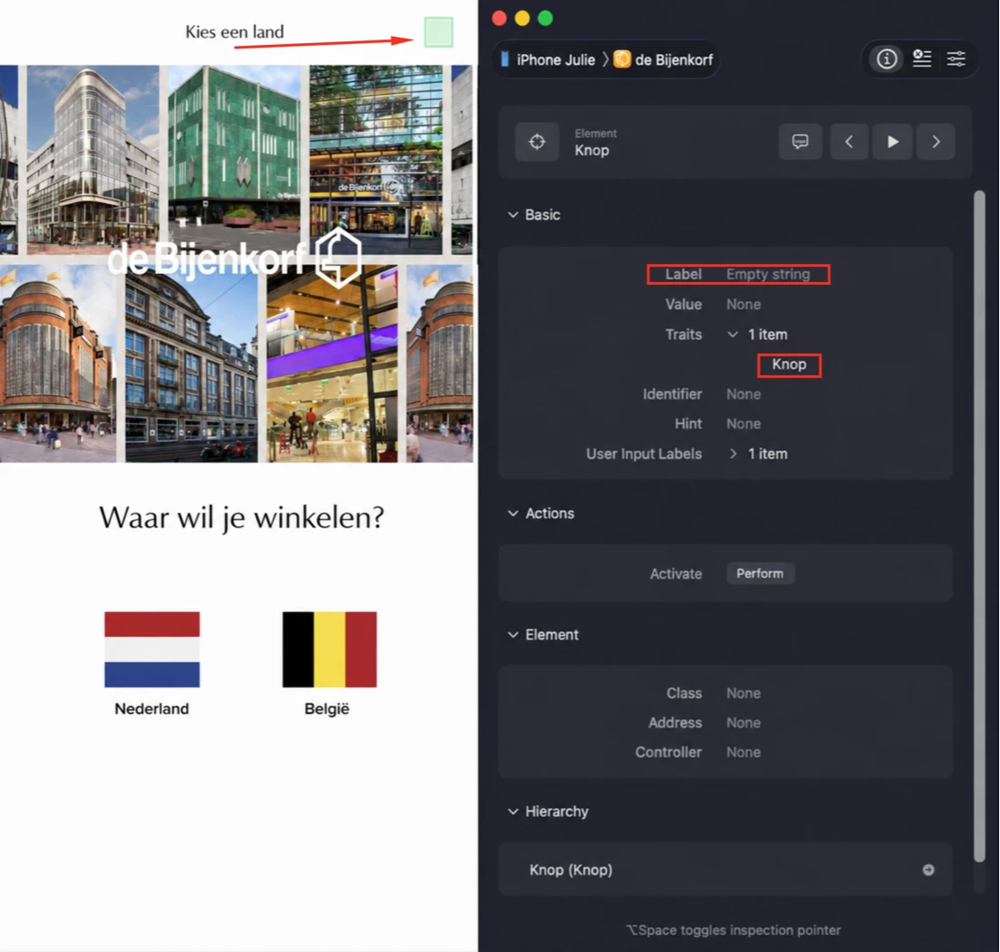
User story
Ik gebruik de app met een toetsenbord en een schermlezer. Wanneer ik op Tab druk om door het scherm te gaan, landt mijn focus soms op onzichtbare elementen die ik niet kan zien. Ik verwacht dat de focus alleen op zichtbare elementen landt.
Oplossing
Zorg dat alleen zichtbare interactieve elementen focusbaar zijn en dat de focusvolgorde een logische volgorde aanhoudt.
Op dit scherm heeft de onzichtbare knop bovenaan geen toegankelijke naam. VoiceOver en TalkBack kondigen alleen "Knop" aan, zonder enige aanwijzing over de functie. Daardoor weten schermlezergebruikers niet wat er gebeurt als ze de knop activeren.
User story
Ik gebruik VoiceOver of TalkBack om de app te bedienen. Wanneer ik een knop zonder naam tegenkom, zegt de schermlezer alleen "Knop", zonder context. Ik verwacht dat elke knop een duidelijke naam heeft die de functie beschrijft.
Oplossing
Geef elk interactief element een toegankelijke naam. In iOS stel je accessibilityLabel in of gebruik je een native UIButton of SwiftUI Button met een zichtbare titel. In Android stel je contentDescription in of gebruik je een native Button met een tekst-attribuut. Geef de voorkeur aan native bedieningselementen, die de juiste rol automatisch aanbieden. Voor zelfgebouwde bedieningselementen (een View met een tap-handler) stel je ook de accessibility trait of rol "Knop" in, zodat de bezoeker naast de naam ook hoort wat het element is.
Op dit scherm bieden de interactieve elementen met de labels "Nederland" en "België" geen rol (of accessibility trait) aan hulpsoftware. Schermlezergebruikers horen wel het label van het element, maar komen niet te weten of het een knop, een link, een selectievakje, een kop of iets anders is. Daardoor kunnen ze niet voorspellen wat er gebeurt als ze het activeren.
User story
Ik lees de app met een schermlezer. Wanneer ik een element zonder rol tegenkom, weet ik niet wat het doet. Ik verwacht dat mijn schermlezer me vertelt of het een knop, link of ander element is.
Oplossing
Stel een rol of trait in op elk interactief en structureel element. In iOS gebruik je accessibilityTraits (bijvoorbeeld .button, .link, .header, .image) of SwiftUI's .accessibilityAddTraits(...). In Android gebruik je native componenten die al een rol aanbieden (Button, Switch, CheckBox), of stel je op zelfgebouwde componenten de rol in via AccessibilityNodeInfoCompat.setRoleDescription(...) of door View te subclassen en onInitializeAccessibilityNodeInfo te overschrijven.
#6 - Decoratieve afbeeldingen zijn niet verborgen voor hulpsoftware
Op dit scherm staat een carrousel met puur decoratieve afbeeldingen die aan schermlezers worden aangeboden. Omdat het icoon geen informatieve waarde heeft, levert het onnodige ruis op voor schermlezergebruikers en wordt het scherm lastiger te navigeren. Decoratieve elementen horen verborgen te zijn voor hulpsoftware.
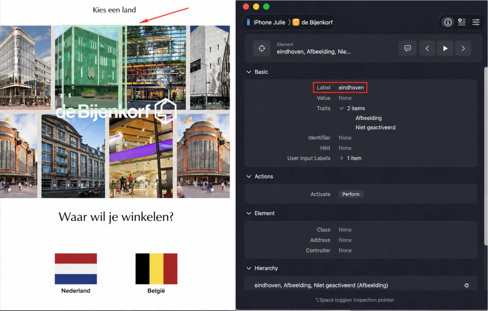
User story
Ik lees de app met een schermlezer. Wanneer ik door het scherm navigeer, hoor ik decoratieve iconen voorgelezen worden die niets toevoegen. Ik verwacht dat die iconen worden overgeslagen, zodat ik me op de echte content kan richten.
Oplossing
Verberg het decoratieve icoon voor schermlezers door aria-hidden="true" of role="presentation" aan het element toe te voegen.
#7 - Bewegende content kan niet gestopt, gepauzeerd of verborgen worden
Op dit scherm beweegt de carrousel automatisch langer dan vijf seconden en is die niet door de bezoeker te pauzeren, te stoppen of te verbergen.
User story
Ik raak afgeleid door beweging op een scherm. Wanneer ik het scherm bezoek en er beweegt iets continu, raak ik steeds de draad kwijt. Ik verwacht dat ik alle bewegende content kan pauzeren of verbergen.
Oplossing
Voeg een zichtbare, bereikbare pauze-/stop-knop toe voor elke automatisch bewegende content die langer dan vijf seconden duurt. Een alternatief is om de beweging automatisch te stoppen na één keer afspelen, of te pauzeren zodra de bezoeker met iets op het scherm interactie heeft. Respecteer ook de systeeminstelling "Beweging verminderen" (iOS: UIAccessibility.isReduceMotionEnabled; Android: ACCESSIBILITY_DISPLAY_ANIMATION_SCALE == 0).
Op dit scherm zien "Personalisatie" en "Help ons om jouw ervaring beter te maken" er visueel uit als koppen, maar in de code is dat niet het geval en worden ze niet als kop aangeboden aan hulpsoftware. Schermlezergebruikers vertrouwen op kop-semantiek om de structuur van het scherm te begrijpen en om tussen secties te springen met de rotor (iOS) of reading controls (Android).
User story
Ik lees de app met een schermlezer. Wanneer ik door het scherm navigeer door tussen koppen te springen, zijn sommige visuele koppen onzichtbaar voor mijn schermlezer. Ik verwacht dat alle visuele koppen door mijn schermlezer worden herkend als echte koppen.
Oplossing
Markeer het element als kop, zodat hulpsoftware het correct aanbiedt. In iOS UIKit voeg je .header toe aan accessibilityTraits; in SwiftUI gebruik je .accessibilityAddTraits(.isHeader). In Android stel je android:accessibilityHeading="true" in (API 28+) of roep je ViewCompat.setAccessibilityHeading(view, true) aan.
#9 - Decoratieve afbeelding is niet verborgen voor hulpsoftware
Op dit scherm staat onder "Personalisatie" een decoratieve afbeelding die aan schermlezers wordt aangeboden met het tekstalternatief "tracking_image". Omdat het icoon geen informatieve waarde heeft, levert het onnodige ruis op voor schermlezergebruikers en wordt het scherm lastiger te navigeren. Decoratieve elementen horen verborgen te zijn voor hulpsoftware.
User story
Ik lees de app met een schermlezer. Wanneer ik door het scherm navigeer, hoor ik decoratieve iconen voorgelezen worden die niets toevoegen. Ik verwacht dat die iconen worden overgeslagen, zodat ik me op de echte content kan richten.
Oplossing
Verberg het decoratieve icoon voor schermlezers door aria-hidden="true" of role="presentation" aan het element toe te voegen.
#10 - Items zijn visueel een lijst maar niet als lijst gemarkeerd
Op dit scherm worden de items onder "Help ons om jouw ervaring beter te maken" visueel weergegeven als een lijst, maar in de code worden ze niet als lijst aangeboden aan hulpsoftware. Schermlezergebruikers horen niet dat de items bij elkaar horen, hoeveel items er zijn, of op welk item ze zich bevinden.
Hetzelfde probleem doet zich voor bij de "Welkom bij de Bijenkorf"-popup die op het Home-scherm verschijnt wanneer een bezoeker de app voor het eerst opent. Daar staat een lijst met 4 items, zoals "Gratis verzending vanaf € 50", maar die wordt niet als lijst aangeboden.
User story
Ik lees de app met een schermlezer. Wanneer ik een groep items tegenkom, kan ik niet horen hoeveel het er zijn of waar de groep begint en eindigt. Ik verwacht dat mijn schermlezer aankondigt dat het een lijst is en hoeveel items die bevat.
Oplossing
Groepeer lijst-items met de juiste lijst-semantiek. In iOS gebruik je bij voorkeur UICollectionView of UITableView, die lijst-semantiek automatisch aanbieden; voor zelfgebouwde containers stel je accessibilityContainerType = .list in. In Android gebruik je RecyclerView, of stel je AccessibilityNodeInfoCompat.setCollectionInfo(...) in op de ouder en setCollectionItemInfo(...) op elk item, zodat TalkBack het aantal items en de positie aankondigt.
Op dit scherm staat de knop "Kies je wereld" voordat de bezoeker een categorie kiest. Deze knop kan met een schermlezer geactiveerd worden. Na het activeren verschijnt een wachtanimatie. Deze animatie fungeert als statusbericht, maar is niet toegankelijk voor blinde bezoekers. Wanneer informatie op het scherm verandert, zoals een bevestiging, een foutmelding of een laadstatus, moeten schermlezergebruikers daar een aankondiging van krijgen zonder dat ze de focus naar het bericht hoeven te verplaatsen.
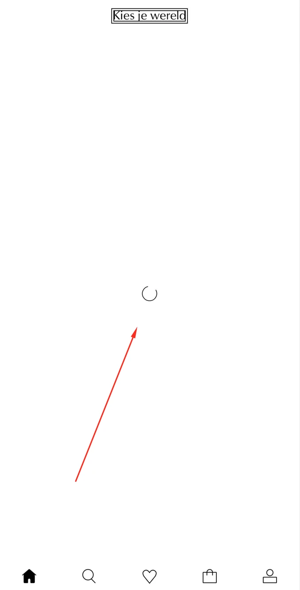
User story
Ik gebruik een schermlezer. Wanneer er een statusbericht op het scherm verschijnt, kondigt mijn schermlezer het niet aan. Ik verwacht dat statusberichten automatisch worden voorgelezen, zonder dat ik er naartoe hoef te navigeren.
Oplossing
Stuur statuswijzigingen als live-aankondiging naar hulpsoftware, zonder de focus te verplaatsen. Op iOS post je een UIAccessibility.Notification.announcement (of .layoutChanged / .screenChanged voor grotere wijzigingen). Op Android gebruik je View.announceForAccessibility(...) of stel je de statuscontainer in als live region met android:accessibilityLiveRegion="polite" (of "assertive" voor urgente berichten). De bezoeker blijft zo waar die is en hoort de update op de achtergrond.
Op dit scherm ziet "Inloggen of word member" er visueel uit als een kop, maar in de code is dat niet het geval en wordt het niet als kop aangeboden aan hulpsoftware. Schermlezergebruikers vertrouwen op kop-semantiek om de structuur van het scherm te begrijpen en om tussen secties te springen met de rotor (iOS) of reading controls (Android).
User story
Ik lees de app met een schermlezer. Wanneer ik het scherm doorloop door tussen koppen te springen, zijn sommige visuele koppen onzichtbaar voor mijn schermlezer. Ik verwacht dat alle visuele koppen door mijn schermlezer als echte koppen worden herkend.
Oplossing
Markeer het element als kop, zodat hulpsoftware het correct aanbiedt. In iOS UIKit voeg je .header toe aan accessibilityTraits; in SwiftUI gebruik je .accessibilityAddTraits(.isHeader). Op Android stel je android:accessibilityHeading="true" in (API 28+) of roep je ViewCompat.setAccessibilityHeading(view, true) aan.
Op dit scherm opent en sluit de knop "Dames" bovenaan een paneel. De uitgeklapte of ingeklapte status van die knop wordt echter niet aangeboden aan hulpsoftware. Daardoor horen schermlezergebruikers niet of het bijbehorende paneel op dat moment uitgeklapt of ingeklapt is.
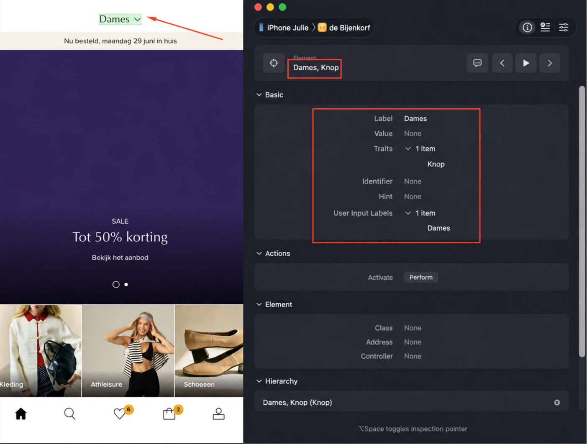
User story
Als bezoeker die een schermlezer gebruikt, heb ik knoppen nodig die panelen openen en sluiten en die aankondigen of ze uitgeklapt of ingeklapt zijn, zodat ik weet of de bijbehorende inhoud op dat moment beschikbaar is zonder dat ik het scherm hoef te verkennen.
Oplossing
Zorg ervoor dat de knop in de code aangeeft of het bijbehorende paneel uitgeklapt of ingeklapt is, en dat deze status wordt bijgewerkt telkens wanneer het paneel wordt geopend of gesloten. Gebruik de native accessibility-API's of accessibility-eigenschappen van het platform, zodat hulpsoftware de actuele status correct kan aankondigen aan bezoekers.
#14 - Carrouselstructuur wordt niet aangeboden aan hulpsoftware
Op dit scherm wordt de promotiebanner gepresenteerd als een carrousel met meerdere slides. Visueel laten paginastipjes zien dat er nog meer slides beschikbaar zijn. Deze informatie wordt echter niet overgebracht aan schermlezergebruikers.
Wanneer de carrousel focus krijgt, kondigt de schermlezer niet aan dat het element meerdere slides bevat of dat er extra inhoud te bereiken is. De paginastipjes worden niet als afzonderlijk bereikbare bedieningselementen aangeboden, en bezoekers worden er niet over geïnformeerd dat ze tussen slides kunnen navigeren. Pas nadat de bezoeker de slide al heeft gewisseld, kondigt VoiceOver informatie aan zoals "pagina 2 van 2".
Daardoor ontdekken schermlezergebruikers mogelijk niet dat er extra slides beschikbaar zijn of begrijpen ze niet dat de banner een interactieve carrousel is.
Dezelfde bevinding doet zich voor in de sectie "De selecties van onze editors".
User story
Als bezoeker die een schermlezer gebruikt, heb ik een carrousel nodig die aankondigt dat hij meerdere slides bevat en die informatie geeft over de huidige positie, zodat ik weet dat er extra inhoud beschikbaar is en ik door alle slides kan navigeren.
Oplossing
Bouw de carrousel met het native accessibility-patroon van het platform voor gepagineerde inhoud. Zorg ervoor dat de carrousel zijn rol, de huidige pagina, het totale aantal pagina's en de ondersteunde navigatie-acties aanbiedt aan hulpsoftware. De huidige pagina en de beschikbare navigatie moeten worden aangekondigd zodra de carrousel focus krijgt en worden bijgewerkt telkens wanneer de getoonde slide verandert.
Op dit scherm zien de volgende teksten er visueel uit als koppen, maar in de code is dat niet het geval en worden ze niet als koppen aangeboden aan hulpsoftware: "Damesmode merken", "De selecties van onze editors" en andere. Schermlezergebruikers vertrouwen op kop-semantiek om de structuur van het scherm te begrijpen en om tussen secties te springen met de rotor (iOS) of reading controls (Android).
User story
Als bezoeker die een schermlezer gebruikt, vertrouw ik op koppen om de structuur van het scherm te begrijpen en snel tussen secties te bewegen. Ik verwacht dat elke visuele sectiekop als kop wordt aangeboden, zodat ik efficiënt kan navigeren.
Oplossing
Markeer visuele sectiekoppen als accessibility-koppen, zodat hulpsoftware ze correct aanbiedt. In iOS UIKit voeg je .header toe aan accessibilityTraits; in SwiftUI gebruik je .accessibilityAddTraits(.isHeader). Op Android stel je android:accessibilityHeading="true" in (API 28+) of roep je ViewCompat.setAccessibilityHeading(view, true) aan.
#16 - Knoppen met dezelfde toegankelijke naam zijn niet te onderscheiden
Op dit scherm hebben meerdere knoppen dezelfde toegankelijke naam, zoals "Toevoegen aan verlanglijst" of "Verwijderen van verlanglijst". Zie secties als "Nieuwe collectie", "Nieuwe merken" en andere. Deze knoppen voeren weliswaar hetzelfde soort actie uit, maar gelden voor verschillende producten. Omdat de toegankelijke namen het bijbehorende product niet benoemen, kunnen schermlezergebruikers de knoppen niet van elkaar onderscheiden of bepalen welk product aan de verlanglijst wordt toegevoegd of eruit wordt verwijderd.
Dezelfde bevinding doet zich voor in de sectie "Laatst bekeken" wanneer de bezoeker meerdere items heeft bekeken. Elk item bevat een "X"-knop met dezelfde toegankelijke naam: "Verwijderen".
Dezelfde bevindingen doen zich voor op de volgende schermen: "Brand page: Coach", "Product page: Coach Brooklyn 39 schoudertas van leer", "Beleef de Bijenkorf: 5x dit is er deze week te doen" en andere.
User story
Als bezoeker die een schermlezer gebruikt, heb ik per verlanglijst-knop nodig dat die benoemt bij welk product hij hoort, zodat ik precies weet welk item aan mijn verlanglijst wordt toegevoegd of eruit wordt verwijderd voordat ik de knop activeer.
Oplossing
Pas de toegankelijke naam van elke verlanglijst-knop aan, zodat die zowel de actie als het bijbehorende product uniek benoemt. Gebruik bijvoorbeeld in plaats van "Toevoegen aan verlanglijst" een toegankelijke naam als "Voeg Tommy Hilfiger Top met peplum en streepprint toe aan verlanglijst". Zorg er op dezelfde manier voor dat knoppen om items van de verlanglijst te verwijderen het betreffende product benoemen.
Op dit scherm, in secties zoals "De selecties van onze editors", bevatten de knoppen witte tekst, bijvoorbeeld "Nieuwe sneaker releases", met een lage contrastverhouding tegen de achtergrond. Omdat de achtergrond een afbeelding is, varieert de kleur ervan. Op de grijze (#A2A0A0) achtergrond is de contrastverhouding bijvoorbeeld 2,6:1. Normale tekst moet een contrastverhouding van minimaal 4,5:1 hebben, en grote tekst (18pt en groter, of 14pt vet en groter) moet een contrastverhouding van minimaal 3,0:1 hebben.
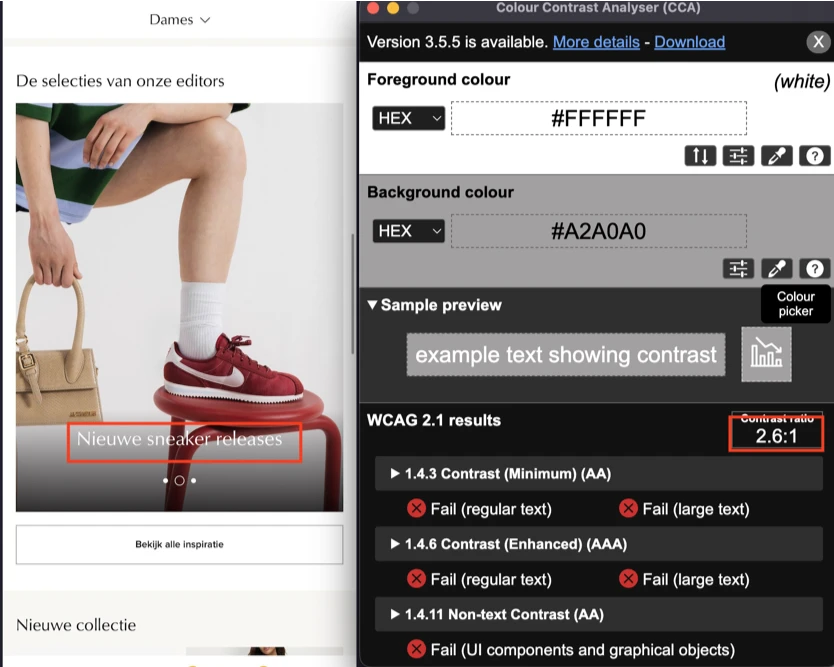
User story
Ik heb een visuele beperking. Wanneer ik tekst lees die nauwelijks afsteekt tegen de achtergrond, kan ik de woorden niet onderscheiden. Ik verwacht dat tekst altijd duidelijk zichtbaar is tegen de achtergrond.
Oplossing
Pas de tekstkleur, de achtergrondkleur of beide aan, zodat de contrastverhouding aan het minimum voldoet. Controleer het resultaat met een contrast-checker en verifieer dit voor elke status waarin de tekst voorkomt (standaard, uitgeschakeld, over afbeeldingen, op gekleurde achtergronden) en voor zowel light- als dark mode.
#18 - Productafbeeldingsgalerij is niet te bedienen met een schermlezer en extern toetsenbord
Op dit scherm, in secties zoals "Nieuwe collectie", bevatten productitems afbeeldingsgalerijen waarmee ziende bezoekers horizontaal kunnen swipen om extra productafbeeldingen te bekijken. Deze functionaliteit is echter niet beschikbaar voor schermlezergebruikers. Wanneer een productafbeelding focus krijgt, kondigt VoiceOver niet aan dat de galerij meerdere afbeeldingen bevat, geeft die de huidige afbeeldingspositie niet aan en biedt die geen ondersteunde acties aan om tussen afbeeldingen te navigeren. De galerij is ook niet te bedienen met een extern toetsenbord. Daardoor worden schermlezergebruikers er niet over geïnformeerd dat er extra productafbeeldingen beschikbaar zijn en kunnen ze die niet bereiken.
User story
Als bezoeker die een schermlezer of een extern toetsenbord gebruikt, heb ik per productafbeeldingsgalerij nodig dat die aanbiedt dat hij meerdere afbeeldingen bevat en die een toegankelijke manier biedt om ertussen te navigeren, zodat ik alle productafbeeldingen kan bereiken en niet alleen de eerste.
Oplossing
Bouw de productafbeeldingsgalerij met het native accessibility-patroon van het platform voor gepagineerde of scrollbare inhoud. Zorg ervoor dat de galerij zijn rol, de huidige afbeeldingspositie, het totale aantal afbeeldingen en de ondersteunde navigatie-acties aanbiedt aan hulpsoftware. De galerij moet ook toetsenbordnavigatie ondersteunen, zodat bezoekers met standaard toetsenbordcommando's tussen afbeeldingen kunnen bewegen. Schermlezergebruikers moeten alle afbeeldingen in de galerij kunnen ontdekken en doorlopen met de standaard VoiceOver- en TalkBack-interacties.
#19 - Eén interactieve kaart wordt aangeboden als meerdere knoppen
Op dit scherm, in de secties "Inspiratie" en "Je membership", fungeert elke kaart als één knop die het bijbehorende artikel opent. In plaats van als één interactief element wordt de kaart echter als meerdere afzonderlijke knoppen aangeboden aan hulpsoftware.
De kaart "Beleef de Bijenkorf: 5x dit is er deze week te doen" in de sectie "Inspiratie" wordt bijvoorbeeld aangekondigd als meerdere losse knoppen, waaronder de categorie "IN DE WINKEL", de artikeltitel en de publicatiedatum. Visueel vormen deze elementen één interactieve kaart en activeren ze dezelfde actie.
Daardoor komen schermlezergebruikers meerdere bedieningselementen tegen waar er visueel maar één is, wat de navigatie verlengt en onzekerheid geeft over welk element geactiveerd moet worden.
Dezelfde bevinding doet zich voor op het scherm "Beleef de Bijenkorf: 5x dit is er deze week te doen" in de sectie "Lees meer".
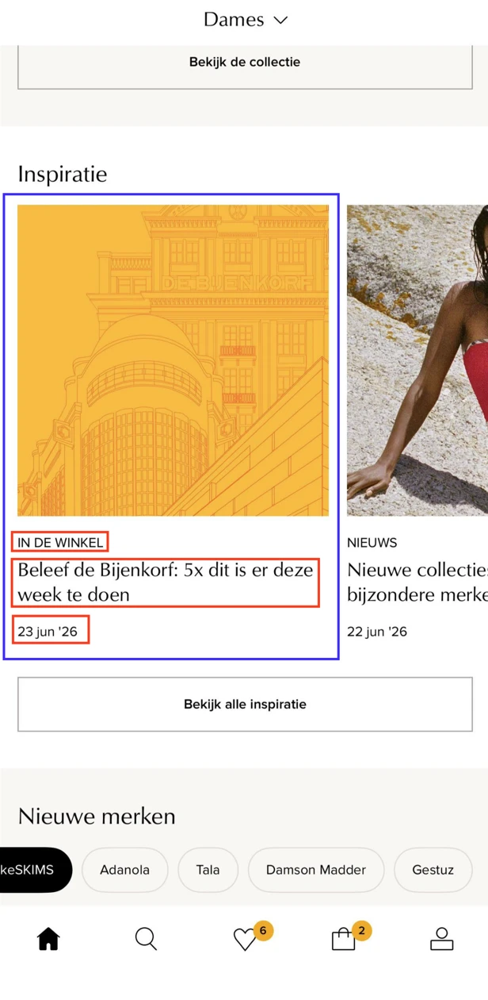
User story
Als bezoeker die een schermlezer gebruikt, heb ik per interactieve kaart nodig dat die als één knop met één toegankelijke naam wordt aangeboden, zodat ik hem als één bedieningselement begrijp en kan activeren zonder door meerdere overbodige knoppen te navigeren.
Oplossing
Bied elke kaart aan als één toegankelijke knop. Voeg de informatie die in de kaart staat, zoals de categorie, de titel en andere relevante tekst, samen tot één toegankelijke naam voor de kaart. Decoratieve of puur structurele elementen mogen niet als afzonderlijke interactieve bedieningselementen worden aangeboden. De hele kaart moet als één element focus krijgen en één actie activeren.
Op dit scherm staan teksten die visueel opgemaakt zijn als koppen, maar in de code is dat niet het geval. Ze worden niet als kop aangeboden aan hulpsoftware. Het gaat om de tekst "Coach" op het scherm en de teksten "Filteren", "Sorteren", "Type tassen" en andere in het filterpaneel. Schermlezergebruikers vertrouwen op kop-semantiek om de structuur van het scherm te begrijpen en om tussen secties te springen met de rotor (iOS) of reading controls (Android).
User story
Als bezoeker die een schermlezer gebruikt, vertrouw ik op koppen om de structuur van het scherm te begrijpen en snel tussen secties te bewegen. Ik verwacht dat elke visuele sectiekop als kop wordt aangeboden, zodat ik efficiënt kan navigeren.
Oplossing
Markeer visuele sectiekoppen als toegankelijkheidskoppen, zodat hulpsoftware ze juist aanbiedt. In iOS UIKit voeg je .header toe aan accessibilityTraits; in SwiftUI gebruik je .accessibilityAddTraits(.isHeader). Op Android stel je android:accessibilityHeading="true" in (API 28+) of roep je ViewCompat.setAccessibilityHeading(view, true) aan.
#21 - Informatie dat tekst visueel doorgestreept is, wordt niet aangeboden aan hulpsoftware
Op dit scherm tonen sommige producten zowel een originele prijs als een afgeprijsde prijs. De originele prijs wordt visueel doorgestreept weergegeven om aan te geven dat die is vervangen door de afgeprijsde prijs. Dit onderscheid wordt echter niet overgebracht aan hulpsoftware. Bij "Coach, Bleecker schoudertas van leer met uitneembaar etui" kondigt een schermlezer bijvoorbeeld de twee prijzen aan zonder aan te geven welke de originele prijs is en welke de afgeprijsde prijs. Daardoor kunnen schermlezergebruikers de relatie tussen de twee prijzen niet begrijpen. Hetzelfde probleem doet zich voor op andere schermen:
"Productpagina: Coach Brooklyn 39 schoudertas van leer"
"Beleef de Bijenkorf: 5x dit is er deze week te doen"
"Verlanglijst" en andere
User story
Als bezoeker die een schermlezer gebruikt, moet de originele en de afgeprijsde prijs programmatisch te onderscheiden zijn, zodat ik kan begrijpen welke prijs is verlaagd en wat de huidige verkoopprijs is.
Oplossing
Zorg dat de originele en de afgeprijsde prijs met betekenisvolle toegankelijkheidsinformatie aan hulpsoftware worden aangeboden. Gebruik de toegankelijkheids-API's van het platform om aan te geven welke prijs de originele prijs is en welke de huidige afgeprijsde prijs. De schermlezer moet bijvoorbeeld "Originele prijs: €495. Huidige prijs: €395." aankondigen in plaats van simpelweg twee prijzen achter elkaar voor te lezen.
#22 - Geselecteerde status wordt niet aangeboden aan hulpsoftware
Op dit scherm opent de filterknop een paneel met filteropties. In dit paneel opent de knop "Sorteren" een submenu. De geselecteerde sorteeroptie in dit submenu wordt nu aangeduid met een vinkje-icoon. De geselecteerde status wordt echter niet aangeboden aan hulpsoftware. De optie "Aanbevolen" is bijvoorbeeld visueel gemarkeerd als geselecteerd, maar VoiceOver kondigt alleen "Aanbevolen, button" aan. Daarnaast wordt het vinkje ook als losse afbeelding aan hulpsoftware aangeboden, met de toegankelijke naam "Propolis/16/Check". Daardoor kunnen schermlezergebruikers niet bepalen welke sorteeroptie op dat moment geselecteerd is. Ze horen bovendien een niet ter zake doende afbeeldingsnaam die het doel van het vinkje niet overbrengt.
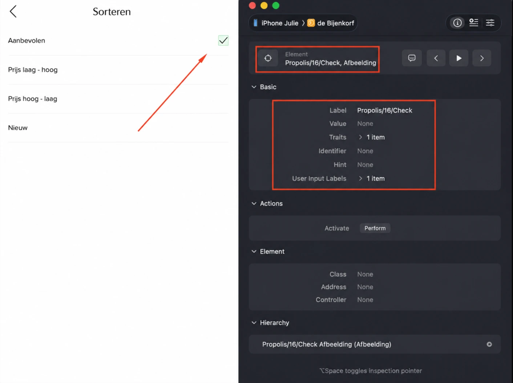
User story
Als bezoeker die een schermlezer gebruikt, moet de op dat moment geselecteerde sorteeroptie haar geselecteerde status aanbieden, zodat ik kan vaststellen welke optie actief is zonder dat ik losse, niet ter zake doende toegankelijkheidselementen hoor.
Oplossing
Bied de geselecteerde status aan op de sorteeroptie zelf, met de native toegankelijkheids-API's van het platform. De knop moet overbrengen dat die geselecteerd is. Het vinkje moet in dit geval niet als los toegankelijkheidselement worden aangeboden. Voeg het in plaats daarvan samen met de toegankelijkheidsinformatie van de knop, of verberg het voor hulpsoftware als het alleen dient als visuele indicator van de geselecteerde status.
Op dit scherm opent de filterknop een paneel met filteropties. In dit paneel staan knoppen die submenu's met selectievakjes openen, bijvoorbeeld de knop "Type tassen". De niet-aangevinkte selectievakjes hebben een grijze (#A6A6A6) rand met een contrastverhouding van 2,4:1 tegen de witte achtergrond. Interface-elementen en betekenisvolle grafische elementen moeten minimaal 3,0:1 contrast hebben tegen aangrenzende kleuren, zodat slechtziende bezoekers ze kunnen herkennen en lokaliseren. Hetzelfde probleem doet zich voor op het scherm "Instellingen". De schermen die vanuit "Instellingen" worden geopend, zoals "Pushmeldingen", "E-mailvoorkeuren", "SMS-voorkeuren" en "Postvoorkeuren", bevatten selectievakjes. De niet-aangevinkte selectievakjes hebben een grijze rand met onvoldoende contrast tegen de witte achtergrond.
User story
Ik heb een visuele beperking. Wanneer ik een formulier invul, kan ik niet zien waar invoervelden beginnen of eindigen. Ik verwacht dat knoppen en velden duidelijk afsteken tegen de achtergrond.
Oplossing
Zorg hier voor een minimaal contrast van 3,0:1. Pas de kleur van het element of de achtergrond aan. Doe dit voor elke status die informatie overbrengt (standaard, met focus, geselecteerd, aangevinkt) en in zowel light- als dark mode.
#24 - Prijsschuifregelaar wordt niet als instelbaar bedieningselement aangeboden
Op dit scherm opent de filterknop een paneel met filteropties. In dit paneel opent "Prijs" het submenu. Het filter "Prijs" in dit submenu wordt gepresenteerd als een schuifregelaar met bereik, waarmee bezoekers een minimum- en maximumprijs kunnen kiezen. De schuifregelaar wordt echter niet juist aangeboden aan hulpsoftware. In plaats van als instelbaar bedieningselement, biedt VoiceOver alleen de waarden "50, Statische tekst" en "750, Statische tekst" aan. De schuifregelaar zelf wordt niet als interactief bedieningselement aangeboden, de huidige waarden zijn niet gekoppeld aan instelbare elementen, en bezoekers kunnen het geselecteerde prijsbereik niet wijzigen. Daardoor kunnen schermlezergebruikers het prijsfilter niet bedienen.
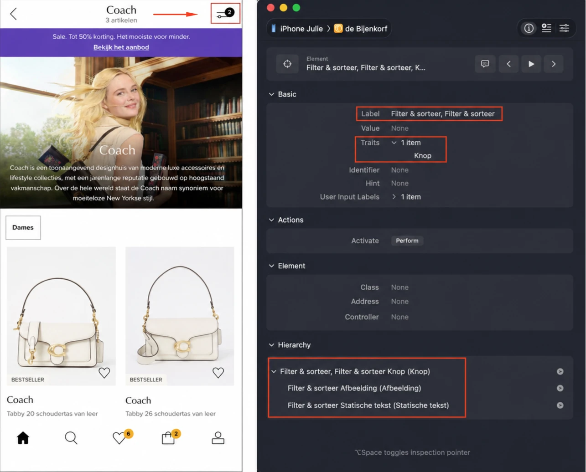
User story
Als bezoeker die een schermlezer gebruikt, moet de prijsschuifregelaar als instelbaar bedieningselement met de huidige waarde worden aangeboden, zodat ik zelfstandig de minimum- en maximumprijs kan instellen en het prijsfilter kan gebruiken.
Oplossing
Zorg dat de prijsschuifregelaar als instelbaar bedieningselement aan hulpsoftware wordt aangeboden. Schermlezergebruikers moeten de huidige minimum- en maximumprijs kunnen vaststellen en beide waarden zelfstandig kunnen aanpassen met de standaard VoiceOver- en TalkBack-gebaren.
Op dit scherm zijn de volgende teksten visueel opgemaakt als koppen, maar in de code is dat niet het geval. Ze worden niet als kop aangeboden aan hulpsoftware: "Coach", "Anderen bekeken ook", "Laatst bekeken" en "Bekijk meer". Schermlezergebruikers vertrouwen op kop-semantiek om de structuur van het scherm te begrijpen en om tussen secties te springen met de rotor (iOS) of reading controls (Android). Hetzelfde probleem doet zich voor bij "Bekijk winkelvoorraad" en "Prijsinformatie" in de bijbehorende panelen. In het paneel "Prijsinformatie" worden ook de teksten "Vorige laagste prijs" en "Originele prijs" niet als kop aangeboden. In de sectie die wordt geopend met de knop "Samenstelling en specificaties" worden ook de teksten "Materiaal en Onderhoud" en "Specificaties" niet als kop aangeboden. In de sectie die wordt geopend met de knop "Bestellen en retourneren" worden ook de teksten "Bezorgen" en "Gratis retourneren" niet als kop aangeboden.
User story
Als bezoeker die een schermlezer gebruikt, vertrouw ik op koppen om de structuur van het scherm te begrijpen en snel tussen secties te bewegen. Ik verwacht dat elke visuele sectiekop als kop wordt aangeboden, zodat ik efficiënt kan navigeren.
Oplossing
Markeer visuele sectiekoppen als toegankelijkheidskoppen, zodat hulpsoftware ze juist aanbiedt. In iOS UIKit voeg je .header toe aan accessibilityTraits; in SwiftUI gebruik je .accessibilityAddTraits(.isHeader). Op Android stel je android:accessibilityHeading="true" in (API 28+) of roep je ViewCompat.setAccessibilityHeading(view, true) aan.
#26 - Naam van knop beschrijft niet wat de knop doet
Op dit scherm opent de knop met het "i"-icoon naast "Vorige laagste prijs" het paneel "Prijsinformatie". De toegankelijke naam is echter "Propolis/16/Info", die het doel van de knop of de actie die hij uitvoert niet beschrijft. Daardoor kunnen schermlezergebruikers niet begrijpen wat er gebeurt als ze de knop activeren. De toegankelijke naam moet de functie van de knop duidelijk beschrijven, in plaats van een interne assetnaam of bestandsnaam aan te bieden.
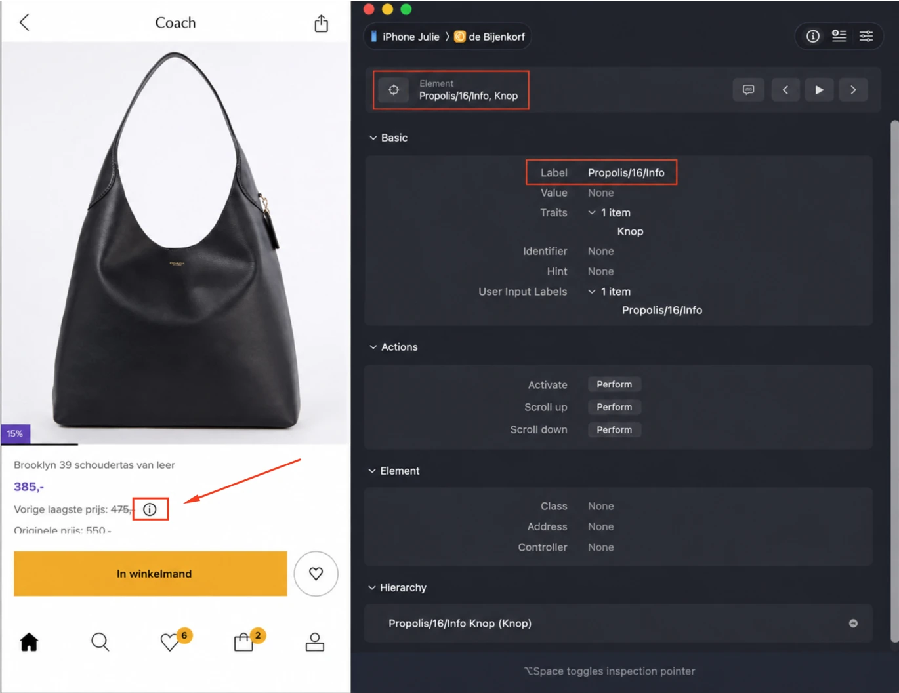
User story
Als bezoeker die een schermlezer gebruikt, moet elke knop een duidelijke, beschrijvende, toegankelijke naam hebben, zodat ik kan begrijpen wat er gebeurt als ik die activeer.
Oplossing
Geef de knop een betekenisvolle toegankelijke naam met de native toegankelijkheids-API's van het platform. De toegankelijke naam moet de functie van de knop beschrijven, bijvoorbeeld "Prijsinformatie" of "Show price information", in plaats van een interne assetnaam zoals "Propolis/16/Info" aan te bieden.
#27 - Gestructureerde tekst wordt als één element aangeboden
Op dit scherm opent de knop met het "i"-icoon naast "Vorige laagste prijs" het paneel "Prijsinformatie". Dit paneel bevat gestructureerde content met meerdere alinea's en sectiekoppen. Deze content wordt echter als één statisch tekstelement aan hulpsoftware aangeboden. Daardoor horen schermlezergebruikers het hele tekstblok als één doorlopende aankondiging. Ze kunnen niet in kleinere logische secties door de content navigeren en kunnen niet dezelfde structuur waarnemen als die visueel wordt gepresenteerd.
User story
Als bezoeker die een schermlezer gebruikt, moet gestructureerde tekst als losse toegankelijkheidselementen worden aangeboden, zodat ik de content sectie voor sectie kan lezen en begrijpen in plaats van naar één lang tekstblok te luisteren.
Oplossing
Bied de content aan met losse elementen die de visuele structuur weerspiegelen. Koppen, alinea's en andere logische secties moeten elk als individueel element worden weergegeven, zodat schermlezergebruikers makkelijker door de content kunnen navigeren en die kunnen begrijpen.
#28 - Uit- en ingeklapte status wordt niet juist aangeboden aan hulpsoftware
Op dit scherm openen en sluiten de knoppen "Productbeschrijving", "Samenstelling en specificaties", "Pasvorm" en vergelijkbare knoppen secties met content. Wanneer een sectie is uitgeklapt, kondigt VoiceOver de knop aan als "Productbeschrijving, Knop, Geselecteerd". Het bedieningselement biedt echter niet zijn uit- of ingeklapte status aan. In plaats daarvan biedt het een geselecteerde status aan, die het gedrag van dit element niet juist beschrijft. Daardoor kunnen schermlezergebruikers niet betrouwbaar vaststellen of de sectie uit- of ingeklapt is.
User story
Als bezoeker die een schermlezer gebruikt, moeten de knoppen aankondigen of hun bijbehorende sectie uit- of ingeklapt is, zodat ik weet of de content op dat moment zichtbaar is.
Oplossing
Zorg dat de knop die de verborgen content uit- en inklapt, overbrengt of de bijbehorende sectie uit- of ingeklapt is, en dat deze status wordt bijgewerkt telkens wanneer het accordeon-onderdeel wordt geopend of gesloten.
Op dit scherm openen de knoppen "Productbeschrijving", "Samenstelling en specificaties", "Pasvorm" en vergelijkbare knoppen secties met verborgen content. De teksten op de knoppen fungeren visueel als sectiekoppen, omdat ze de content die volgt inleiden en ordenen. Deze teksten worden echter alleen als knop aan hulpsoftware aangeboden en niet als kop. Daardoor kunnen schermlezergebruikers niet dezelfde contentstructuur waarnemen als ziende gebruikers en kunnen ze niet rechtstreeks tussen deze secties navigeren met de Headings-rotor (VoiceOver) of kop-navigatie in TalkBack.
User story
Als bezoeker die een schermlezer gebruikt, moeten teksten die secties met content inleiden ook als koppen worden aangeboden, zodat ik de paginastructuur kan begrijpen en snel tussen secties kan navigeren.
Oplossing
Markeer de sectie-bedieningselementen als koppen met de native toegankelijkheids-API's van het platform, en behoud de knopfunctionaliteit. Op iOS voeg je de Header accessibility trait toe naast de Button trait. Op Android markeer je het bedieningselement als toegankelijkheidskop en houd je het klikbaar. Zo herkent hulpsoftware deze bedieningselementen als zowel koppen als interactieve elementen.
#30 - Productafbeeldingen die de galerij op volledig scherm openen, worden niet aangeboden aan hulpsoftware
Op dit scherm fungeren de productafbeeldingen bovenaan als knoppen die de productgalerij op volledig scherm openen. Deze afbeeldingen worden echter niet aangeboden aan hulpsoftware. Bij navigatie met VoiceOver krijgen de productafbeeldingen geen toegankelijkheidsfocus en worden ze niet aangekondigd. Daardoor kunnen schermlezergebruikers niet ontdekken dat de productafbeeldingen bestaan, kunnen ze niet begrijpen dat ze geactiveerd kunnen worden, en kunnen ze de productgalerij niet openen. Een vergelijkbaar probleem doet zich voor in de galerijweergave op volledig scherm. De rij miniaturen onderaan het scherm fungeert als bedieningselementen om tussen productafbeeldingen te navigeren. Deze miniatuur-bedieningselementen worden echter ook niet aangeboden aan hulpsoftware. Schermlezergebruikers kunnen er niet bij om vast te stellen welke afbeelding op dat moment getoond wordt, of om rechtstreeks naar een andere afbeelding in de galerij te navigeren.
User story
Als bezoeker die een schermlezer gebruikt, moeten productafbeeldingen die een galerij openen worden opgenomen in de toegankelijkheids-navigatievolgorde en als interactieve bedieningselementen worden aangeboden, zodat ik ze kan ontdekken, hun doel kan begrijpen en de galerij zelfstandig kan openen.
Oplossing
Bied de productafbeeldingen als toegankelijke interactieve bedieningselementen aan hulpsoftware aan. Elke afbeelding die de galerij opent, moet worden opgenomen in de navigatievolgorde, een passende interactieve rol zoals button aanbieden, een betekenisvolle toegankelijke naam hebben die zowel de afbeelding als de actie beschrijft, en bedienbaar zijn met standaard VoiceOver- en TalkBack-interacties.
#31 - Relatie tussen bezorgopties en kosten wordt niet programmatisch overgebracht
Op dit scherm wordt in de sectie die met "Bestellen en retourneren" wordt geopend, de informatie onder "Bezorgen" en "Retourmogelijkheden" visueel in een tabelvorm gepresenteerd, waarbij elke bezorg- of retouroptie gekoppeld is aan bijbehorende informatie zoals bezorgtijden en kosten. Deze relatie wordt echter niet overgebracht aan hulpsoftware. In plaats daarvan kondigt VoiceOver de content aan als een reeks losse statische tekstelementen. Het leest bijvoorbeeld: "Bezorgen op maandag t/m vrijdag", dan "Kosten", dan "08:30-22:00", en ten slotte "3,95". Daardoor kunnen schermlezergebruikers niet betrouwbaar vaststellen welke kosten en bezorgtijd bij welke bezorgoptie horen.
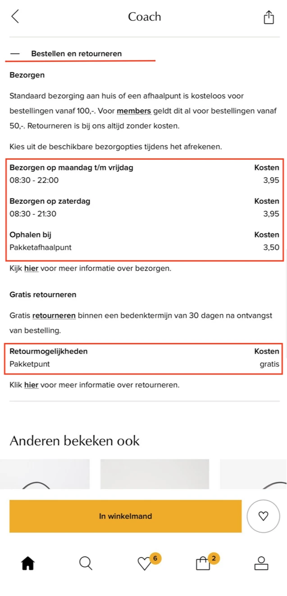
User story
Als bezoeker die een schermlezer gebruikt, moet de relatie tussen bezorgopties, bezorgtijden en kosten programmatisch worden overgebracht, zodat ik kan begrijpen welke informatie bij elkaar hoort.
Oplossing
Bied de bezorg- en retourinformatie zo aan dat de relaties tussen elke optie, de bezorgtijd en de kosten programmatisch worden overgebracht. Als de informatie tabeldata is, bied die dan aan met de native toegankelijkheids-API's van het platform voor tabellen. Groepeer anders de bij elkaar horende informatie in één element, zodat elke bezorg- of retouroptie samen met de bijbehorende bezorgtijd en kosten wordt aangekondigd.
#32 - Statusbericht wordt niet aangekondigd aan schermlezergebruikers
Op dit scherm verschijnt het statusbericht "Artikel toegevoegd aan winkelmand" wanneer het artikel aan de winkelmand wordt toegevoegd, maar dit wordt niet door schermlezers aangekondigd. Wanneer informatie op het scherm verandert, zoals een bevestiging, een foutmelding of een laadstatus, moeten schermlezergebruikers een aankondiging krijgen zonder dat ze de focus naar het bericht hoeven te verplaatsen. Hetzelfde probleem doet zich voor op het scherm "Verlanglijst".
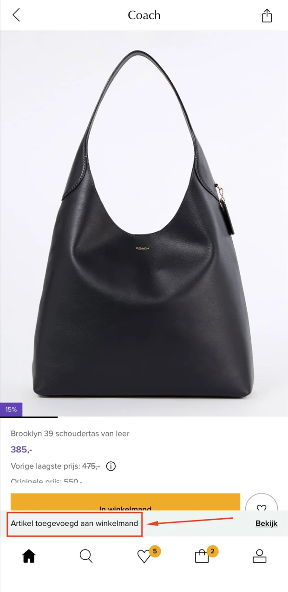
User story
Ik lees de website met een schermlezer. Wanneer er een statusbericht op de pagina verschijnt, kondigt mijn schermlezer het niet aan. Ik verwacht dat statusberichten automatisch worden voorgelezen, zonder dat ik ernaartoe hoef te navigeren.
Oplossing
Stuur statuswijzigingen als live aankondigingen naar hulpsoftware, zonder de focus te verplaatsen. Op iOS plaats je een UIAccessibility.Notification.announcement (of .layoutChanged / .screenChanged voor grotere wijzigingen). Op Android gebruik je View.announceForAccessibility(...) of stel je de status-container in als live region met android:accessibilityLiveRegion="polite" (of "assertive" voor urgente berichten). De bezoeker blijft waar die is en hoort de update op de achtergrond.
Op dit scherm zijn de volgende teksten visueel opgemaakt als koppen, maar in de code is dat niet het geval: "Inspiratie", "Beleef de Bijenkorf: 5x dit is er deze week te doen,", "Björn Borg Rooftop Rally" en andere. Schermlezergebruikers vertrouwen op kop-semantiek om de structuur van het scherm te begrijpen en om tussen secties te springen met de rotor (iOS) of reading controls (Android).
User story
Als bezoeker die een schermlezer gebruikt, vertrouw ik op koppen om de structuur van het scherm te begrijpen en snel tussen secties te bewegen. Ik verwacht dat elke visuele sectiekop als kop wordt aangeboden, zodat ik efficiënt kan navigeren.
Oplossing
Markeer visuele sectiekoppen als toegankelijke koppen, zodat hulpsoftware ze correct aanbiedt. Voeg in iOS UIKit .header toe aan accessibilityTraits; gebruik in SwiftUI .accessibilityAddTraits(.isHeader). Stel op Android android:accessibilityHeading="true" in (API 28+) of roep ViewCompat.setAccessibilityHeading(view, true) aan.
Op dit scherm zijn de teksten in de submenu's visueel opgemaakt als koppen, maar in de code is dat niet het geval. In het submenu "Sale" met het filter "Dames" gaat het bijvoorbeeld om deze teksten: "Sale", "Categorieën", "Bestsellers in de Sale", "Merken" en "Populaire categorieën". Schermlezergebruikers vertrouwen op kop-semantiek om de structuur van het scherm te begrijpen en om tussen secties te springen met de rotor (iOS) of reading controls (Android).
User story
Als bezoeker die een schermlezer gebruikt, vertrouw ik op koppen om de structuur van het scherm te begrijpen en snel tussen secties te bewegen. Ik verwacht dat elke visuele sectiekop als kop wordt aangeboden, zodat ik efficiënt kan navigeren.
Oplossing
Markeer visuele sectiekoppen als toegankelijke koppen, zodat hulpsoftware ze correct aanbiedt. Voeg in iOS UIKit .header toe aan accessibilityTraits; gebruik in SwiftUI .accessibilityAddTraits(.isHeader). Stel op Android android:accessibilityHeading="true" in (API 28+) of roep ViewCompat.setAccessibilityHeading(view, true) aan.
Op dit scherm is de tekst "Verlanglijst" visueel opgemaakt als kop, maar in de code is dat niet het geval. In het paneel "Selecteer maat" is ook de tekst "Selecteer maat" niet als kop gemarkeerd. Schermlezergebruikers vertrouwen op kop-semantiek om de structuur van het scherm te begrijpen en om tussen secties te springen met de rotor (iOS) of reading controls (Android).
User story
Als bezoeker die een schermlezer gebruikt, vertrouw ik op koppen om de structuur van het scherm te begrijpen en snel tussen secties te bewegen. Ik verwacht dat elke visuele sectiekop als kop wordt aangeboden, zodat ik efficiënt kan navigeren.
Oplossing
Markeer visuele sectiekoppen als toegankelijke koppen, zodat hulpsoftware ze correct aanbiedt. Voeg in iOS UIKit .header toe aan accessibilityTraits; gebruik in SwiftUI .accessibilityAddTraits(.isHeader). Stel op Android android:accessibilityHeading="true" in (API 28+) of roep ViewCompat.setAccessibilityHeading(view, true) aan.
#36 - Knoppen met dezelfde toegankelijke naam zijn niet van elkaar te onderscheiden
Op dit scherm hebben meerdere "X"-knoppen dezelfde toegankelijke naam "Verwijderen van verlanglijst" wanneer er meerdere items zijn toegevoegd. Deze knoppen voeren weliswaar hetzelfde soort actie uit, maar ze gelden voor verschillende producten. Omdat de toegankelijke namen het bijbehorende product niet benoemen, kunnen schermlezergebruikers de knoppen niet van elkaar onderscheiden en niet bepalen welk product aan de verlanglijst wordt toegevoegd of eruit wordt verwijderd.
Hetzelfde probleem doet zich voor bij andere knoppen op dit scherm. Zie de knoppen met een envelop-icoon die dezelfde toegankelijke naam hebben: "Mail bij nieuwe voorraad", en de knoppen met een tas-icoon die dezelfde toegankelijke naam hebben: "In winkelmand".
User story
Als bezoeker die een schermlezer gebruikt, heb ik nodig dat elke "X"-knop het bijbehorende product benoemt, zodat ik precies weet welk item van mijn verlanglijst wordt verwijderd voordat ik de knop activeer.
Oplossing
Pas de toegankelijke naam van elke "X"-knop aan, zodat die zowel de actie als het bijbehorende product uniek benoemt. Gebruik bijvoorbeeld in plaats van "Verwijderen van verlanglijst" een toegankelijke naam zoals "Verwijderen van verlanglijst: NikeSKIMS Matte trainings crop top met stretch".
Op dit scherm is de tekst "Winkelmand" visueel opgemaakt als kop, maar in de code is dat niet het geval. Schermlezergebruikers vertrouwen op kop-semantiek om de structuur van het scherm te begrijpen en om tussen secties te springen met de rotor (iOS) of reading controls (Android).
Hetzelfde probleem doet zich voor bij de teksten "Selecteer uw Aantal" en "Selecteer uw kleur" in de bijbehorende panelen die openen via de pijl-knoppen in de itemsecties onder "Aantal" en "Kleur".
Ook de knop "Laten inpakken" opent een bijbehorend paneel. In dat paneel zijn de volgende teksten niet als kop gemarkeerd: "Laten inpakken", "De inpakkosten", "Ergens anders laten bezorgen?", "Stap 1" en andere.
User story
Als bezoeker die een schermlezer gebruikt, vertrouw ik op koppen om de structuur van het scherm te begrijpen en snel tussen secties te bewegen. Ik verwacht dat elke visuele sectiekop als kop wordt aangeboden, zodat ik efficiënt kan navigeren.
Oplossing
Markeer visuele sectiekoppen als toegankelijke koppen, zodat hulpsoftware ze correct aanbiedt. Voeg in iOS UIKit .header toe aan accessibilityTraits; gebruik in SwiftUI .accessibilityAddTraits(.isHeader). Stel op Android android:accessibilityHeading="true" in (API 28+) of roep ViewCompat.setAccessibilityHeading(view, true) aan.
#38 - Een decoratieve afbeelding wordt niet verborgen voor schermlezers
Op dit scherm wordt, wanneer de winkelmand leeg is, een decoratieve afbeelding aangeboden aan hulpsoftware met de toegankelijke naam "basket-placeholder". Decoratieve afbeeldingen brengen geen informatie over en voeren geen actie uit, en horen niet aangeboden te worden aan schermlezers. Het aankondigen van decoratieve content voegt onnodige ruis toe en maakt het voor bezoekers lastiger om zich op betekenisvolle informatie te richten.
Hetzelfde probleem doet zich voor wanneer de winkelmand items bevat. Zie het vrachtwagen-icoon vóór een tekst zoals "Nu besteld, dinsdag 30 juni in huis" met de toegankelijke naam "truck", en het cadeau-icoon boven de tekst "Laat je aankoop inpakken en voeg er desgewenst een persoonlijk bericht toe." met de toegankelijke naam "gift".
Daarnaast heeft het decoratieve "%"-icoon geen toegankelijk label en wordt het ook niet verborgen voor de schermlezer.
User story
Als bezoeker die een schermlezer gebruikt, verwacht ik dat decoratieve afbeeldingen worden genegeerd, zodat ik alleen betekenisvolle inhoud en bedieningselementen hoor. Wanneer decoratieve afbeeldingen worden aangekondigd, onderbreken ze de leesstroom en wordt navigeren minder efficiënt.
Oplossing
Verberg decoratieve afbeeldingen voor hulpsoftware, zodat ze niet in de accessibility tree terechtkomen. In iOS UIKit stel je isAccessibilityElement = false in voor decoratieve UIImageView-elementen; in SwiftUI pas je .accessibilityHidden(true) toe op decoratieve afbeeldingen.
Stel op Android android:importantForAccessibility="no" in (of "noHideDescendants" waar passend), of zorg er op een andere manier voor dat de decoratieve view niet als accessibility-element wordt aangeboden.
Alleen informatieve afbeeldingen horen aan hulpsoftware aangeboden te worden, voorzien van een betekenisvolle toegankelijke naam.
#39 - Productinformatie heeft in de code niet dezelfde structuur als visueel getoond
Op dit scherm bevat elk productoverzicht gestructureerde informatie, waaronder het merk, de productnaam, de huidige prijs, de vorige prijs, de originele prijs en de korting. Visueel worden deze stukken informatie als losse elementen met een duidelijke hiërarchie getoond, bijvoorbeeld "385", daarna "Coach Brooklyn 39 schoudertas van leer", daarna "Vorige laagste prijs: 475" en "Originele prijs: 550".
Wanneer je deze informatie met een schermlezer doorloopt, worden al deze teksten echter samen als één doorlopend blok aangekondigd in plaats van als losse stukken informatie. Daardoor kunnen bezoekers niet afzonderlijk door het merk, de productnaam, de prijzen en de korting navigeren en nemen ze niet dezelfde structuur waar als die visueel wordt getoond.
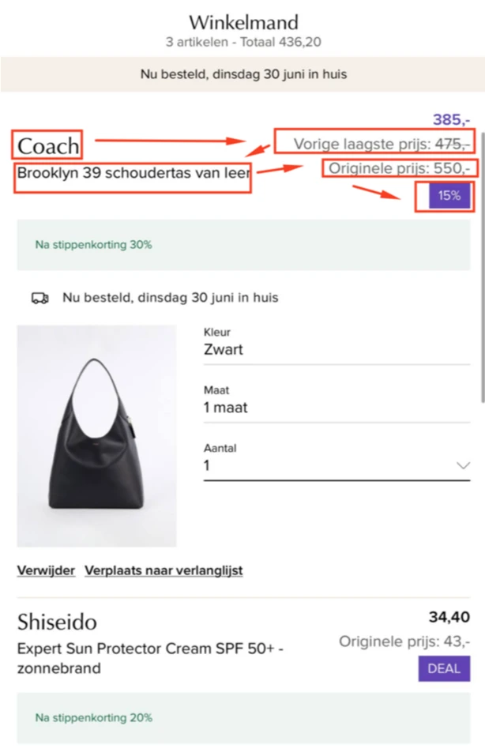
User story
Als bezoeker die een schermlezer gebruikt, heb ik nodig dat gestructureerde productinformatie wordt aangekondigd in dezelfde logische secties waarin ze visueel wordt getoond, zodat ik elk stuk informatie afzonderlijk kan doorlopen en begrijpen.
Oplossing
Bied de productinformatie aan met losse elementen die de visuele structuur weerspiegelen. Het merk, de productnaam, de huidige prijs, de vorige prijs, de originele prijs, de korting en andere betekenisvolle stukken informatie horen afzonderlijk en in een logische leesvolgorde aangekondigd te worden. Zo kunnen schermlezergebruikers de productinformatie op dezelfde manier doorlopen en begrijpen als ze visueel wordt getoond.
#40 - Knoppen met dezelfde toegankelijke naam zijn niet van elkaar te onderscheiden
Op dit scherm worden, wanneer er meerdere items zijn toegevoegd, meerdere knoppen met dezelfde teksten getoond: "Verwijder" en "Verplaats naar verlanglijst". Ze hebben dezelfde toegankelijke namen. Deze knoppen voeren weliswaar hetzelfde soort actie uit, maar ze gelden voor verschillende producten. Omdat de toegankelijke namen het bijbehorende product niet benoemen, kunnen schermlezergebruikers de knoppen niet van elkaar onderscheiden en niet bepalen op welk product ze betrekking hebben.
User story
Als bezoeker die een schermlezer gebruikt, heb ik nodig dat elke knop het bijbehorende product benoemt, zodat ik bijvoorbeeld precies weet welk item uit de winkelmand wordt verwijderd voordat ik de knop activeer.
Oplossing
Pas de toegankelijke naam van elke knop aan, zodat die zowel de actie als het bijbehorende product uniek benoemt.
Op dit scherm bevatten de itemsecties, wanneer er items aan de winkelmand zijn toegevoegd, de pijl-iconen die panelen openen met keuzeopties, bijvoorbeeld onder "Aantal" of "Kleur". Deze elementen bieden geen rol (of accessibility trait) aan hulpsoftware. Schermlezergebruikers horen het label van het element, maar komen niet te weten of het een knop, een link, een selectievakje, een kop of iets anders is, en kunnen dus niet voorspellen wat er gebeurt wanneer ze het activeren.
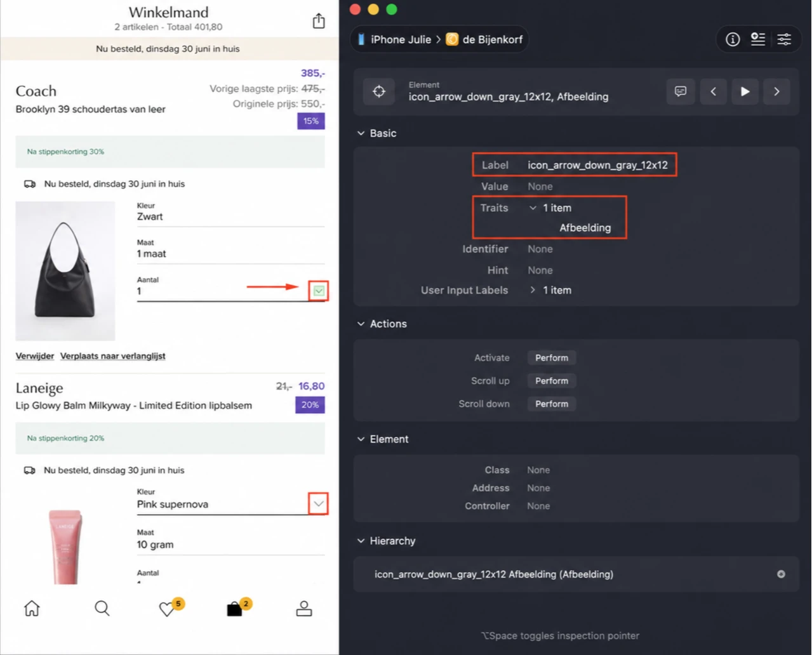
User story
Ik lees de website met een schermlezer. Wanneer ik een element zonder rol tegenkom, weet ik niet wat het doet. Ik verwacht dat mijn schermlezer me vertelt of het een knop, link of ander element is.
Oplossing
Stel een rol of trait in op elk interactief en structureel element. Gebruik op iOS accessibilityTraits (bijvoorbeeld .button, .link, .header, .image) of in SwiftUI .accessibilityAddTraits(...). Gebruik op Android native componenten die al een rol aanbieden (Button, Switch, CheckBox), of stel op custom componenten de rol in via AccessibilityNodeInfoCompat.setRoleDescription(...) of door View te subclasseren en onInitializeAccessibilityNodeInfo te overschrijven.
#42 - Extern toetsenbord kan sommige bedieningselementen niet bereiken of bedienen
Op dit scherm bevatten de itemsecties, wanneer er items aan de winkelmand zijn toegevoegd, de pijl-iconen die panelen openen met keuzeopties, bijvoorbeeld onder "Aantal" of "Kleur". Deze bedieningselementen zijn niet te bereiken met Tab/Shift-Tab, niet te activeren met Space/Enter en ook niet anderszins te bedienen met een extern toetsenbord. Bezoekers die niet via touch kunnen werken, omdat ze afhankelijk zijn van Full Keyboard Access (iOS), Switch Access (Android) of een extern toetsenbord, worden buitengesloten van de functionaliteit.
User story
Ik gebruik de website met een toetsenbord. Wanneer ik door de pagina navigeer, zijn sommige knoppen of links niet bereikbaar of bruikbaar met mijn toetsenbord. Ik verwacht dat ik elk onderdeel van de pagina alleen met mijn toetsenbord kan bedienen.
Oplossing
Zorg dat elk interactief element toetsenbordfocus kan krijgen en met het toetsenbord te bedienen is. Hanteer op iOS Full Keyboard Access: standaard UIKit/SwiftUI-bedieningselementen werken meteen; implementeer voor custom bedieningselementen UIFocusEnvironment en verwerk toetscommando's (UIKeyCommand). Stel op Android android:focusable="true" en android:focusableInTouchMode="true" in (waar passend), en verwerk KeyEvent.KEYCODE_ENTER / KEYCODE_DPAD_CENTER. Test elk scherm met een aangesloten extern toetsenbord en zonder touch.
Op dit scherm bevatten de itemsecties, wanneer er items aan de winkelmand zijn toegevoegd, de pijl-iconen onder "Aantal", "Kleur" en andere. Deze elementen openen panelen waarmee bezoekers de bijbehorende optie kunnen wijzigen.
Hun toegankelijke naam is echter "icon_arrow_down_gray_12x12", die het doel van het bedieningselement of de uit te voeren actie niet beschrijft. In plaats daarvan bevat de naam een interne assetnaam die voor schermlezergebruikers betekenisloos is.
Daardoor kunnen schermlezergebruikers niet begrijpen wat het activeren van deze bedieningselementen doet. De toegankelijke naam zou duidelijk de actie moeten beschrijven van het openen van het bijbehorende keuzepaneel.
Een vergelijkbaar probleem doet zich voor bij andere knoppen op dit scherm. Zie de "X"-knop in het paneel dat opent via de knop "Laten inpakken". De toegankelijke naam is "foundation general close". In het paneel "Laten inpakken" dat opent via de knop "Laten inpakken" hebben de keuzerondjes dezelfde niet-beschrijvende toegankelijke naam: "CircleEmpty".
User story
Als bezoeker die een schermlezer gebruikt, heb ik nodig dat elke knop een duidelijke en beschrijvende toegankelijke naam heeft, zodat ik begrijp wat er gebeurt wanneer ik die activeer.
Oplossing
Geef elk bedieningselement een betekenisvolle toegankelijke naam via de native accessibility-API's van het platform. De toegankelijke naam zou het doel van het bedieningselement of de uit te voeren actie moeten beschrijven, bijvoorbeeld "Aantal wijzigen", "Aantal selecteren", "Kleur wijzigen" of "Kleur selecteren", in plaats van een interne assetnaam zoals "icon_arrow_down_gray_12x12".
#44 - Toegankelijke naam bevat het zichtbare label niet
Op dit scherm heeft, in het paneel "Laten inpakken" dat opent via de knop "Laten inpakken", de knop met het zichtbare tekstlabel "Annuleer" een toegankelijke naam die die zichtbare tekst niet bevat: "Bewaar". Gebruikers van Voice Control en Voice Access, die het zichtbare label uitspreken om een bedieningselement te activeren, kunnen het niet aansturen. Schermlezergebruikers horen bovendien een verschil tussen wat ze zien en wat ze horen.
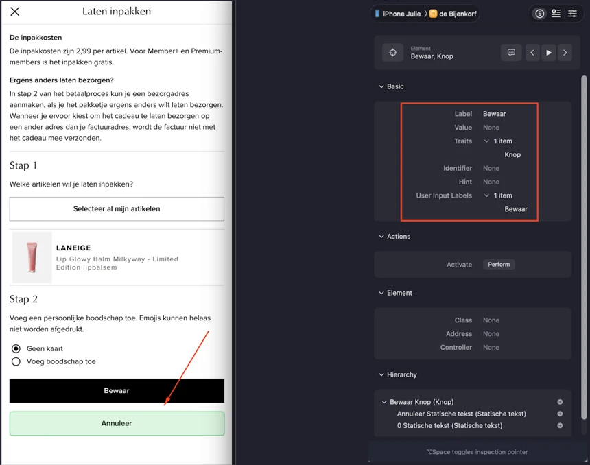
User story
Ik gebruik de website met spraakinvoer. Wanneer ik de naam van een knop hardop uitspreek, gebeurt er niets, omdat de onderliggende naam anders is. Ik verwacht dat ik elke knop kan activeren door de tekst uit te spreken die ik op het scherm zie.
Oplossing
Zorg dat de toegankelijke naam van elk bedieningselement het zichtbare label bevat, in dezelfde woordvolgorde. Begin op iOS, als je accessibilityLabel gebruikt, met de zichtbare tekst ("Bewaar, concept" voor een Bewaar-knop met een hint "concept"). Geef in SwiftUI de voorkeur aan Button("Bewaar") { ... } boven custom labels. Stel op Android de contentDescription zo in dat die de zichtbare tekst bevat, of laat de inhoud van een TextView automatisch de naam worden. Heb je extra context voor schermlezers nodig, voeg die dan toe ná het zichtbare label, vervang het nooit.
#45 - Statusbericht wordt niet aangekondigd aan schermlezergebruikers
Op dit scherm opent de knop "Cadeaucard of voucher toevoegen" een paneel "Cadeaucard of voucher toevoegen". Wanneer in dat paneel het formulier met een onjuiste code wordt verzonden, verschijnt er een foutmelding, zoals "Helaas, het toevoegen of verwijderen van een voucher/cadeaucard is mislukt. Probeer het later nog eens.". Dit is een statusbericht, maar het wordt niet door schermlezers aangekondigd. Wanneer informatie op het scherm verandert, een bevestiging, een fout, een laadstatus, horen schermlezergebruikers een aankondiging te krijgen zonder dat ze de focus naar het bericht hoeven te verplaatsen.
User story
Ik lees de website met een schermlezer. Wanneer er een statusbericht op de pagina verschijnt, kondigt mijn schermlezer het niet aan. Ik verwacht dat statusberichten automatisch worden voorgelezen, zonder dat ik ernaartoe hoef te navigeren.
Oplossing
Stuur statuswijzigingen als live-aankondigingen naar hulpsoftware, zonder de focus te verplaatsen. Plaats op iOS een UIAccessibility.Notification.announcement (of .layoutChanged / .screenChanged bij grotere wijzigingen). Gebruik op Android View.announceForAccessibility(...) of stel de statuscontainer in als live region met android:accessibilityLiveRegion="polite" (of "assertive" voor dringende berichten). De bezoeker blijft waar die is en hoort de update op de achtergrond.
Op dit scherm zien de teksten "Bezorgmoment", "Artikelen (1)" en "Factuuradres" er visueel uit als kop, maar worden ze niet als kop aangeboden aan hulpsoftware. Schermlezergebruikers vertrouwen op kop-semantiek om de structuur van het scherm te begrijpen en om tussen secties te springen met de rotor (iOS) of reading controls (Android). Hetzelfde probleem doet zich voor bij andere teksten. De knop "Adres toevoegen" opent een paneel "Bezorgadres". De tekst "Bezorgadres" wordt niet als kop aangeboden. In het paneel "Factuuradres", dat opent met de knop "Wijzig" in de sectie "Factuuradres", wordt de tekst "Factuuradres" ook niet als kop aangeboden.
User story
Ik gebruik de app met een schermlezer en navigeer op koppen om de structuur van het scherm te begrijpen en snel tussen secties te springen. Ik verwacht dat elke visuele sectiekop ook als kop wordt aangeboden, zodat ik efficiënt kan navigeren.
Oplossing
Markeer visuele sectiekoppen als kop, zodat hulpsoftware ze correct aanbiedt. In iOS UIKit voeg je .header toe aan accessibilityTraits, in SwiftUI gebruik je .accessibilityAddTraits(.isHeader). In Android stel je android:accessibilityHeading="true" in (API 28+) of roep je ViewCompat.setAccessibilityHeading(view, true) aan.
#47 - Voortgangsindicator van de checkout wordt niet correct doorgegeven aan hulpsoftware
Op dit scherm staat bovenaan een voortgangsindicator voor de checkout. Visueel bestaat die uit drie verbonden stappen: "Bezorging", "Betaling" en "Bevestiging", waarbij de huidige stap is gemarkeerd. Bij navigatie met een schermlezer worden alleen de drie staplabels aangekondigd. Het verband tussen deze labels als één voortgangsindicator wordt niet overgebracht, en ook de huidige stap wordt niet aangeduid. Daardoor horen schermlezergebruikers drie losse tekstelementen in plaats van een gestructureerde voortgangsindicator die de voortgang door het checkoutproces laat zien. Hetzelfde probleem doet zich voor bij alle stappen binnen het checkoutproces.
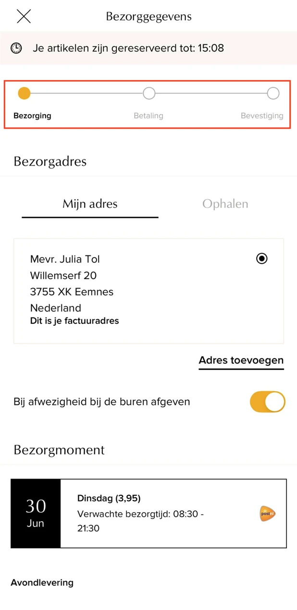
User story
Ik gebruik de app met een schermlezer. Ik heb nodig dat de voortgangsindicator van de checkout overbrengt dat de stappen bij één reeks horen en dat de huidige stap wordt aangeduid, zodat ik dezelfde informatie over de voortgang krijg als ziende bezoekers.
Oplossing
Bied de voortgangsindicator van de checkout aan via de native accessibility-API's van het platform. Zorg dat hulpsoftware de stappen herkent als onderdeel van één voortgangsindicator, dat de volgorde behouden blijft en dat duidelijk wordt welke stap op dat moment actief is. Schermlezergebruikers horen zo dezelfde informatie over de voortgang van de checkout als visueel wordt getoond.
Op dit scherm staat bovenaan een voortgangsindicator die de huidige positie van de bezoeker in het checkoutproces toont. De lichtgrijze (#A0A0A0) teksten "Betaling" en "Bevestiging" hebben een contrastverhouding van 2,6:1 tegen de witte achtergrond. Hetzelfde probleem doet zich voor op de stap "Betalen" bij de tekst "Bevestiging".
Een vergelijkbaar probleem doet zich voor bij de knopteksten "Mijn adres" en "Ophalen" wanneer ze niet geselecteerd zijn. De grijze (#AEAEAE) tekst op de witte achtergrond heeft een contrastverhouding van 2,2:1.
Normale tekst moet een contrastverhouding van minimaal 4,5:1 hebben, en grote tekst (18pt en groter, of 14pt vet en groter) een contrastverhouding van minimaal 3,0:1.
User story
Ik heb een visuele beperking. Wanneer ik tekst lees die nauwelijks afsteekt tegen de achtergrond, kan ik de woorden niet onderscheiden. Ik verwacht dat tekst altijd duidelijk zichtbaar is tegen de achtergrond.
Oplossing
Pas de tekstkleur, de achtergrondkleur of beide aan, zodat de contrastverhouding aan het minimum voldoet. Controleer het resultaat met een contrast checker en verifieer het voor elke status waarin de tekst voorkomt (standaard, uitgeschakeld, over afbeeldingen, op gekleurde achtergronden) en in zowel light- als dark mode.
Op dit scherm staat bovenaan een voortgangsindicator die de huidige positie van de bezoeker in het checkoutproces toont. De grijze (#A7A7A7) stippen op deze voortgangsindicator hebben een contrastverhouding van 2,4:1 tegen de witte achtergrond. De oranje (#F6A801) stip die de huidige stap aangeeft, heeft een contrastverhouding van 2,0:1 tegen de witte achtergrond. Hetzelfde probleem doet zich voor op de stap "Betalen". Interface-elementen en betekenisvolle grafische elementen moeten minimaal 3,0:1 contrast hebben tegen aangrenzende kleuren, zodat slechtziende bezoekers ze kunnen herkennen en lokaliseren.
Een vergelijkbaar probleem doet zich voor bij de toggle-knop "Bij afwezigheid bij de buren afgeven" in de sectie "Mijn adres". In de aan-status staat de witte toggle op de oranje achtergrond. Hetzelfde doet zich voor op de stap "Betalen". Wanneer de betaalmethode "Creditcard / debitcard" is, geldt dit voor de toggle-knop naast "Onthoud deze gegevens".
User story
Ik heb een visuele beperking. Wanneer ik een formulier invul, kan ik niet zien waar invoervelden beginnen of eindigen. Ik verwacht dat knoppen en velden duidelijk afsteken tegen de achtergrond.
Oplossing
Pas de kleur van het element of de achtergrond aan zodat de contrastverhouding minimaal 3,0:1 is. Doe dit voor elke status die informatie overbrengt (standaard, met focus, geselecteerd, aangevinkt) en in zowel light- als dark mode. Controleer de verhouding met een contrast checker.
Op dit scherm heeft het keuzerondje naast het adres in de sectie "Mijn adres" de toegankelijke naam "CircleFilled", die niet beschrijft wat het bedieningselement doet of welke actie het uitvoert. Daardoor kunnen schermlezergebruikers niet begrijpen wat er gebeurt als ze deze bedieningselementen activeren. Bovendien bevat de toegankelijke naam van de knop niet de zichtbare tekst. Gebruikers van Voice Control en Voice Access, die de zichtbare tekst uitspreken om een bedieningselement te activeren, kunnen het niet aansturen. Ook schermlezergebruikers ervaren een verschil tussen wat ze zien en wat ze horen.
Een vergelijkbaar probleem doet zich voor op de stap "Betalen". In de sectie "Betalen" opent de knop met de betaalmethode en een pijl-icoon het paneel "Betalen" met betaalopties. Dit paneel bevat een "X"-knop met een niet-beschrijvende toegankelijke naam: "0PatternsIconsGeneralIconClose". Wanneer de betaalmethode "Creditcard / debitcard" is en de bezoeker het formulier met onjuiste gegevens verzendt, bevatten de invoervelden "X"-knoppen met dezelfde nietszeggende toegankelijke namen: "iconRemoveBlack".
User story
Ik gebruik de app met een schermlezer. Ik heb nodig dat elke knop een duidelijke en beschrijvende toegankelijke naam heeft, zodat ik begrijp wat er gebeurt als ik die activeer. Ik gebruik de app ook met spraakbediening. Wanneer ik de naam van een knop hardop uitspreek, gebeurt er niets, omdat de onderliggende naam anders is. Ik verwacht elke knop te kunnen activeren door de tekst uit te spreken die ik op het scherm zie.
Oplossing
Geef elk bedieningselement een betekenisvolle toegankelijke naam via de native accessibility-API's van het platform. De toegankelijke naam beschrijft het doel van het bedieningselement of de actie die het uitvoert. Zorg dat de toegankelijke naam van elk bedieningselement het zichtbare label bevat, in dezelfde woordvolgorde.
Op dit scherm heeft de toggle-knop "Bij afwezigheid bij de buren afgeven" in de sectie "Mijn adres" geen toegankelijke naam. De schermlezer kondigt alleen de rol aan, maar geeft geen informatie over wat het element is of doet. Hetzelfde probleem doet zich voor op de stap "Betalen". Wanneer de betaalmethode "Creditcard / debitcard" is, geldt dit voor de toggle-knop naast "Onthoud deze gegevens".
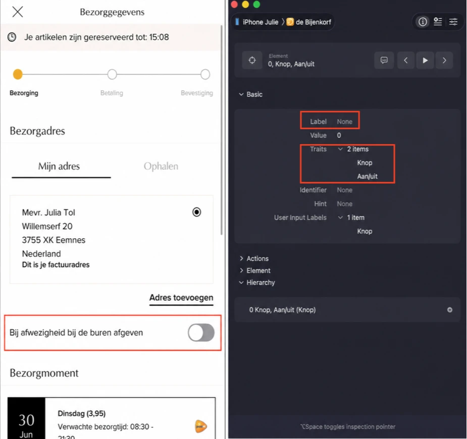
User story
Ik gebruik de app met een schermlezer. Wanneer ik een knop of link zonder naam tegenkom, hoor ik alleen 'knop' of 'link' zonder context. Ik verwacht dat elk element een duidelijke naam heeft die het doel ervan uitlegt.
Oplossing
Voeg een toegankelijke naam toe aan elk interactief element. In iOS stel je accessibilityLabel in of vertrouw je op de zichtbare titel van een standaard control. In Android stel je contentDescription in of zorg je dat de zichtbare tekst van het element als naam wordt gebruikt. De naam beschrijft beknopt het doel van het element, niet het uiterlijk, en komt overeen met het zichtbare label als dat er is, zodat gebruikers van Voice Control en Voice Access het kunnen activeren door de naam uit te spreken.
#52 - Statusbericht wordt niet aangekondigd aan schermlezergebruikers
Op dit scherm opent de knop "Adres toevoegen" in de sectie "Bezorgadres" een paneel "Bezorgadres". Wanneer in dit paneel het invoerveld "Postcode" met een onjuiste waarde wordt verzonden, verschijnt er onder het veld een foutmelding, zoals "Gebruik het juiste format voor de postcode (1111AA)". Dit is een statusbericht, maar het wordt niet aangekondigd door schermlezers. Wanneer informatie op het scherm wijzigt, zoals een bevestiging, een fout of een laadstatus, moeten schermlezergebruikers een aankondiging krijgen zonder dat ze de focus naar het bericht hoeven te verplaatsen.
User story
Ik gebruik de app met een schermlezer. Wanneer er een statusbericht op het scherm verschijnt, kondigt mijn schermlezer dit niet aan. Ik verwacht dat statusberichten automatisch worden voorgelezen, zonder dat ik ernaar hoef te navigeren.
Oplossing
Geef statuswijzigingen aan hulpsoftware door als live-aankondiging, zonder de focus te verplaatsen. In iOS post je een UIAccessibility.Notification.announcement (of .layoutChanged / .screenChanged voor grotere wijzigingen). In Android gebruik je View.announceForAccessibility(...) of stel je de statuscontainer in als live region met android:accessibilityLiveRegion="polite" (of "assertive" voor dringende berichten). De bezoeker blijft zo waar die is en hoort de update op de achtergrond.
#53 - Selecteerbare bezorgopties worden niet als interactieve bedieningselementen aangeboden
Op dit scherm worden in de sectie "Mijn adres" de beschikbare bezorgopties onder "Bezorgmoment" gepresenteerd als selecteerbare kaarten. Door op zo'n kaart te tikken, selecteer je de bijbehorende bezorgdatum en -tijd. Deze elementen worden echter aan hulpsoftware aangeboden als statische tekst in plaats van als interactieve bedieningselementen. Daardoor horen schermlezergebruikers wel de bezorginformatie, maar krijgen ze niet te horen dat de elementen geactiveerd kunnen worden om een bezorgoptie te selecteren. Ze kunnen ook niet vaststellen welke bezorgoptie op dat moment geselecteerd is.
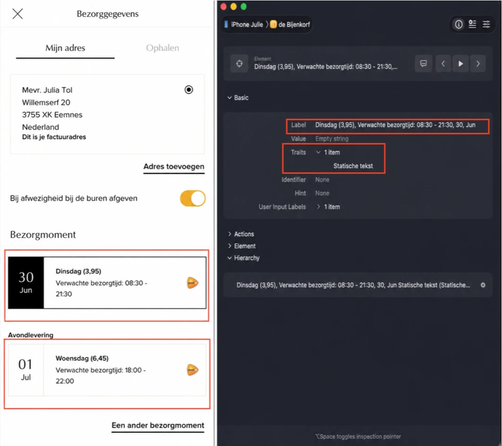
User story
Ik gebruik de app met een schermlezer. Ik heb nodig dat bezorgopties als selecteerbare bedieningselementen worden aangeboden en aankondigen of ze geselecteerd zijn, zodat ik met vertrouwen mijn voorkeursmoment voor bezorging kan kiezen.
Oplossing
Bied de bezorgopties aan via de native accessibility-API's van het platform als een groep met enkelvoudige selectie. Omdat er maar één bezorgoptie tegelijk geselecteerd kan worden, bied je elke optie aan als een selecteerbaar bedieningselement dat de huidige status (geselecteerd of niet geselecteerd) programmatisch overbrengt. Elke bezorgoptie heeft een betekenisvolle toegankelijke naam die de bezorgdatum, bezorgtijd en kosten bevat. Schermlezergebruikers kunnen zo naar elke optie navigeren, vaststellen of die geselecteerd is en die activeren met de standaard gebaren van VoiceOver of TalkBack om een andere bezorgoptie te kiezen.
Wanneer je in de telefooninstellingen een grotere tekstgrootte kiest (voorbij de laatste optie), schaalt niet alle tekst in de app correct mee. Hetzelfde probleem doet zich voor op de stap "Betalen".
User story
Ik heb een visuele beperking. Wanneer ik de tekstgrootte in mijn telefooninstellingen vergroot, verandert de tekst in de app niet. Ik verwacht dat alle tekst in de app mijn gekozen instelling voor tekstgrootte volgt.
Op dit scherm zien de teksten "Bezorgen", "Cadeaucard", "Betalen" en "Artikelen (1)" er visueel uit als kop, maar worden ze niet als kop aangeboden aan hulpsoftware. Schermlezergebruikers vertrouwen op kop-semantiek om de structuur van het scherm te begrijpen en om tussen secties te springen met de rotor (iOS) of reading controls (Android). Hetzelfde probleem doet zich voor bij andere teksten. Onder "Betalen" staat een knop die het paneel met betaalopties opent. De tekst "Betalen" in dit paneel wordt niet als kop aangeboden.
User story
Ik gebruik de app met een schermlezer en navigeer op koppen om de structuur van het scherm te begrijpen en snel tussen secties te springen. Ik verwacht dat elke visuele sectiekop ook als kop wordt aangeboden, zodat ik efficiënt kan navigeren.
Oplossing
Markeer visuele sectiekoppen als kop, zodat hulpsoftware ze correct aanbiedt. In iOS UIKit voeg je .header toe aan accessibilityTraits, in SwiftUI gebruik je .accessibilityAddTraits(.isHeader). In Android stel je android:accessibilityHeading="true" in (API 28+) of roep je ViewCompat.setAccessibilityHeading(view, true) aan.
Op dit scherm geeft het interactieve element met het "+"-icoon naast "Voeg cadeaucard toe" in de sectie "Cadeaucard" geen rol (of accessibility trait) door aan hulpsoftware. Schermlezergebruikers horen het label van het element, maar komen niet te weten of het een knop, link, selectievakje, kop of iets anders is. Daardoor kunnen ze niet voorspellen wat er gebeurt als ze het activeren. Hetzelfde probleem doet zich voor in de sectie "Betalen" bij het interactieve element met een pijl-icoon dat het paneel met betaalopties opent. In het paneel met betaalopties doet hetzelfde probleem zich voor bij de betaalopties.
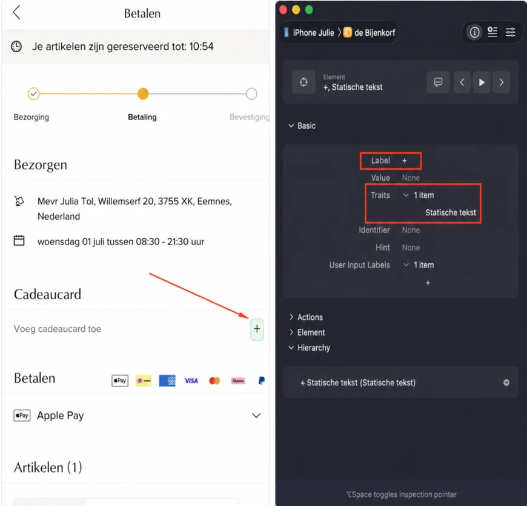
User story
Ik gebruik de app met een schermlezer. Wanneer ik een element zonder rol tegenkom, weet ik niet wat het doet. Ik verwacht dat mijn schermlezer mij vertelt of het een knop, link of ander element is.
Oplossing
Stel een rol of trait in op elk interactief en structureel element. In iOS gebruik je accessibilityTraits (bijvoorbeeld .button, .link, .header, .image) of de SwiftUI-modifier .accessibilityAddTraits(...). In Android gebruik je native componenten die al een rol doorgeven (Button, Switch, CheckBox), of stel je bij eigen componenten de rol in via AccessibilityNodeInfoCompat.setRoleDescription(...) of door View te subclassen en onInitializeAccessibilityNodeInfo te overschrijven.
#57 - Extern toetsenbord kan sommige bedieningselementen niet bereiken of bedienen
Op dit scherm kan het interactieve element met het "+"-icoon naast "Voeg cadeaucard toe" in de sectie "Cadeaucard" niet worden bereikt met Tab/Shift-Tab, niet worden geactiveerd met Space/Enter en ook niet anderszins worden bediend met een extern toetsenbord. Bezoekers die geen touch kunnen gebruiken, omdat ze afhankelijk zijn van Full Keyboard Access (iOS), Switch Access (Android) of een extern toetsenbord, kunnen deze functionaliteit niet gebruiken.
Hetzelfde probleem doet zich voor in de sectie "Betalen" bij het interactieve element met een pijl-icoon dat het paneel met betaalopties opent. In het paneel met betaalopties doet hetzelfde probleem zich voor bij de betaalopties.
User story
Ik gebruik de app met een toetsenbord. Wanneer ik door het scherm navigeer, zijn sommige knoppen of links niet bereikbaar of bedienbaar met mijn toetsenbord. Ik verwacht elk deel van het scherm te kunnen bedienen met alleen mijn toetsenbord.
Oplossing
Zorg dat elk interactief element met het toetsenbord focusbaar en bedienbaar is. In iOS ondersteun je Full Keyboard Access: standaard UIKit/SwiftUI-controls werken direct; voor eigen controls implementeer je UIFocusEnvironment en handel je key commands af (UIKeyCommand). In Android stel je android:focusable="true" en android:focusableInTouchMode="true" in (waar passend) en handel je KeyEvent.KEYCODE_ENTER / KEYCODE_DPAD_CENTER af. Test elk scherm met een extern toetsenbord aangesloten en zonder touch.
Op dit scherm heeft het interactieve element met het "+"-icoon naast "Voeg cadeaucard toe" in de sectie "Cadeaucard" de toegankelijke naam "+", die niet beschrijft wat het bedieningselement doet of welke actie het uitvoert. Daardoor kunnen schermlezergebruikers niet begrijpen wat er gebeurt als ze deze bedieningselementen activeren.
User story
Ik gebruik de app met een schermlezer. Ik heb nodig dat elke knop een duidelijke en beschrijvende toegankelijke naam heeft, zodat ik begrijp wat er gebeurt als ik die activeer.
Oplossing
Geef elk bedieningselement een betekenisvolle toegankelijke naam via de native accessibility-API's van het platform. De toegankelijke naam beschrijft het doel van het bedieningselement of de actie die het uitvoert.
#59 - Informatieve betaalmethode-iconen hebben geen tekstalternatief
Impact: GrootType: ContentWCAG: 1.1.1EN: 11.1.1.1
Op dit scherm staat in de sectie "Betalen" een rij iconen van betaalmethoden (bijvoorbeeld Apple Pay, iDEAL, American Express, Visa, Mastercard, Klarna en PayPal). Deze iconen geven aan welke betaalmethoden beschikbaar zijn. De iconen worden echter niet aangeboden aan hulpsoftware en hebben geen tekstalternatief. Daardoor kunnen schermlezergebruikers niet vaststellen welke betaalmethoden worden geaccepteerd.
User story
Ik gebruik de app met een schermlezer. Ik heb nodig dat de beschikbare betaalmethoden worden aangekondigd, zodat ik weet welke betaalopties ik kan gebruiken voordat ik verderga met de checkout.
Oplossing
Geef een tekstalternatief voor de beschikbare betaalmethoden via de native accessibility-API's van het platform. Dat kan door elk betaalmethode-icoon een betekenisvolle toegankelijke naam te geven (bijvoorbeeld "Visa", "Mastercard", "PayPal"). Zorg dat schermlezergebruikers dezelfde informatie over de beschikbare betaalmethoden krijgen als ziende bezoekers.
#60 - Geselecteerde status wordt niet doorgegeven aan hulpsoftware
Op dit scherm opent in de sectie "Betalen" het interactieve element met een geselecteerde betaalmethode en een pijl-icoon het paneel met betaalopties. In dit paneel wordt de geselecteerde betaaloptie aangeduid met een vinkje, maar de geselecteerde status wordt niet doorgegeven aan hulpsoftware. Schermlezergebruikers horen niet of het element geselecteerd is of niet.
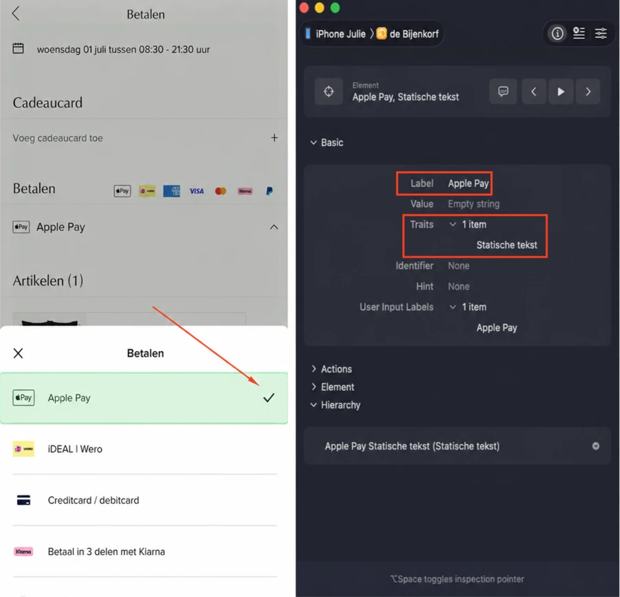
User story
Ik gebruik de app met een schermlezer. Wanneer ik een tab of selectievakje tegenkom, kan ik niet horen of die op dat moment geselecteerd is. Ik verwacht dat mijn schermlezer de huidige status duidelijk aankondigt.
Oplossing
Werk de accessibility-status van het element bij zodat die weergeeft of het geselecteerd is. In iOS voeg je .selected toe aan accessibilityTraits, of stel je accessibilityValue in op een gelokaliseerde "Geselecteerd" / "Niet geselecteerd". In Android roep je setSelected(true/false) op de view aan, of werk je AccessibilityNodeInfoCompat.setCheckable(true) en setChecked(true/false) bij voor aanvinkbare elementen. Zorg dat de status wordt bijgewerkt zodra de waarde verandert, zodat schermlezergebruikers altijd de huidige status horen.
#61 - Statusbericht wordt niet aangekondigd aan schermlezergebruikers
Op dit scherm verschijnt, wanneer de betaalmethode "Creditcard / debitcard" is en de bezoeker het formulier met onjuiste gegevens verzendt, het statusbericht "Vul s.v.p. de ontbrekende gegevens in", maar dit wordt niet aangekondigd door schermlezers. Wanneer informatie op het scherm wijzigt, zoals een bevestiging, een fout of een laadstatus, moeten schermlezergebruikers een aankondiging krijgen zonder dat ze de focus naar het bericht hoeven te verplaatsen.
User story
Ik gebruik de app met een schermlezer. Wanneer er een statusbericht op het scherm verschijnt, kondigt mijn schermlezer dit niet aan. Ik verwacht dat statusberichten automatisch worden voorgelezen, zonder dat ik ernaar hoef te navigeren.
Oplossing
Geef statuswijzigingen aan hulpsoftware door als live-aankondiging, zonder de focus te verplaatsen. In iOS post je een UIAccessibility.Notification.announcement (of .layoutChanged / .screenChanged voor grotere wijzigingen). In Android gebruik je View.announceForAccessibility(...) of stel je de statuscontainer in als live region met android:accessibilityLiveRegion="polite" (of "assertive" voor dringende berichten). De bezoeker blijft zo waar die is en hoort de update op de achtergrond.
Op dit scherm zien de teksten "Account" en "Member" er visueel uit als koppen, maar in de code is dat niet het geval: ze worden niet als kop aangeboden aan hulpsoftware. Schermlezergebruikers vertrouwen op kop-semantiek om de structuur van het scherm te begrijpen en om tussen secties te springen met de rotor (iOS) of reading controls (Android). Hetzelfde probleem zie je bij andere teksten. Wanneer je de knop voor de QR-code activeert, is in het geopende paneel de tekst "Membercard" niet als kop gemarkeerd.
User story
Als bezoeker die een schermlezer gebruikt, vertrouw ik op koppen om de structuur van het scherm te begrijpen en snel tussen secties te bewegen. Ik verwacht dat elke visuele sectiekop ook als kop wordt aangeboden, zodat ik efficiënt kan navigeren.
Oplossing
Markeer visuele sectiekoppen als toegankelijkheidskoppen, zodat hulpsoftware ze correct aanbiedt. Voeg in iOS UIKit .header toe aan accessibilityTraits. Gebruik in SwiftUI .accessibilityAddTraits(.isHeader). Stel op Android android:accessibilityHeading="true" in (API 28+) of roep ViewCompat.setAccessibilityHeading(view, true) aan.
Op dit scherm ziet de tekst "Aankopen" er visueel uit als een kop, maar in de code is dat niet het geval: hij wordt niet als kop aangeboden aan hulpsoftware. Schermlezergebruikers vertrouwen op kop-semantiek om de structuur van het scherm te begrijpen en om tussen secties te springen met de rotor (iOS) of reading controls (Android). Hetzelfde probleem zie je op het scherm met aankoopdetails bij de teksten "Aankoopdetails", "Betaaloverzicht", "Bezorgadres" en andere. Hetzelfde probleem doet zich voor op andere schermen die vanaf dit scherm geopend worden: "Retouren", "Retourdetails" en "In de winkel retourneren".
User story
Als bezoeker die een schermlezer gebruikt, vertrouw ik op koppen om de structuur van het scherm te begrijpen en snel tussen secties te bewegen. Ik verwacht dat elke visuele sectiekop ook als kop wordt aangeboden, zodat ik efficiënt kan navigeren.
Oplossing
Markeer visuele sectiekoppen als toegankelijkheidskoppen, zodat hulpsoftware ze correct aanbiedt. Voeg in iOS UIKit .header toe aan accessibilityTraits. Gebruik in SwiftUI .accessibilityAddTraits(.isHeader). Stel op Android android:accessibilityHeading="true" in (API 28+) of roep ViewCompat.setAccessibilityHeading(view, true) aan.
Op dit scherm wordt, wanneer het tabblad "Online" geselecteerd is, elk gekocht artikel gepresenteerd als een knop die de details van die aankoop opent. De toegankelijke namen van deze knoppen identificeren de bijbehorende aankoop echter niet. Voor de aankoop van "Augustina dekbedovertrek van katoensatijn 220TC" is de toegankelijke naam bijvoorbeeld "29 juni 2026, 135,96", die alleen de aankoopdatum en het totaalbedrag bevat. Daardoor kunnen schermlezergebruikers niet bepalen welke aankoop geopend wordt wanneer ze de knop activeren. De toegankelijke naam moet de aankoop duidelijk identificeren, bijvoorbeeld door naast de aankoopdatum ook de productnaam of een andere betekenisvolle aanduiding op te nemen. Hetzelfde probleem zie je op het scherm "Retouren" dat geopend wordt met de knop "Online retourneren".
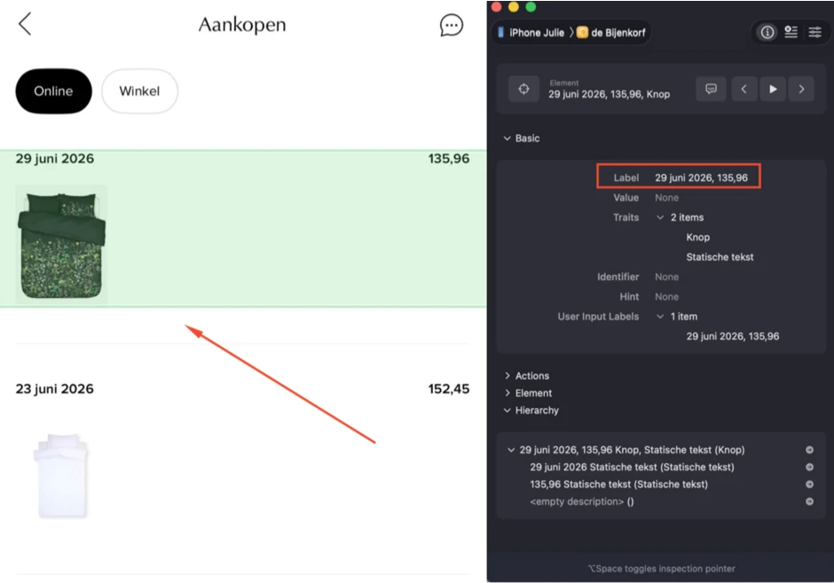
User story
Als bezoeker die een schermlezer gebruikt, heb ik bij elke aankoopknop een duidelijke aanduiding nodig van de aankoop die hij opent, zodat ik het juiste artikel kan kiezen zonder te moeten gokken op basis van alleen de aankoopdatum of het bedrag.
Oplossing
Geef elke aankoopknop een betekenisvolle toegankelijke naam via de native toegankelijkheids-API's van het platform. De toegankelijke naam moet de aankoop identificeren, bijvoorbeeld met de productnaam of een andere betekenisvolle aanduiding, samen met aanvullende informatie die de aankoop onderscheidt van andere, zoals de aankoopdatum. Gebruik bijvoorbeeld in plaats van "29 juni 2026, 135,96" een toegankelijke naam als: "Augustina dekbedovertrek van katoensatijn 220TC, gekocht op 29 juni 2026, totaal € 135,96". Zo kunnen schermlezergebruikers de juiste aankoop identificeren voordat ze de knop activeren.
#65 - Statusbericht wordt niet aangekondigd aan schermlezergebruikers
Op dit scherm verschijnt het bevestigingsbericht "Ordernummer gekopieerd" wanneer de bezoeker de knop met het ordernummer activeert om het naar het klembord te kopiëren. Dit statusbericht wordt echter niet aangekondigd door schermlezers. Daardoor weten schermlezergebruikers niet of het ordernummer succesvol is gekopieerd. Statusberichten die verschijnen zonder dat de toetsenbord- of schermlezerfocus verplaatst, moeten automatisch worden aangekondigd door hulpsoftware.
User story
Ik lees de app met een schermlezer. Wanneer er een statusbericht op het scherm verschijnt, kondigt mijn schermlezer het niet aan. Ik verwacht dat statusberichten automatisch worden voorgelezen, zonder dat ik ernaartoe hoef te navigeren.
Oplossing
Stuur statuswijzigingen als live aankondiging naar hulpsoftware, zonder de focus te verplaatsen. Plaats op iOS een UIAccessibility.Notification.announcement (of .layoutChanged / .screenChanged bij grotere wijzigingen). Gebruik op Android View.announceForAccessibility(...) of stel de statuscontainer in als live region met android:accessibilityLiveRegion="polite" (of "assertive" voor urgente berichten). De bezoeker blijft waar die is en hoort de update op de achtergrond.
Op dit scherm ziet de tekst "Mijn gegevens" er visueel uit als een kop, maar in de code is dat niet het geval: hij wordt niet als kop aangeboden aan hulpsoftware. Schermlezergebruikers vertrouwen op kop-semantiek om de structuur van het scherm te begrijpen en om tussen secties te springen met de rotor (iOS) of reading controls (Android). Hetzelfde probleem zie je bij teksten op de schermen die vanaf dit scherm geopend worden, zoals "Wachtwoord", "Telefoonnummer", "Factuuradres" en "Bezorgadressen".
User story
Als bezoeker die een schermlezer gebruikt, vertrouw ik op koppen om de structuur van het scherm te begrijpen en snel tussen secties te bewegen. Ik verwacht dat elke visuele sectiekop ook als kop wordt aangeboden, zodat ik efficiënt kan navigeren.
Oplossing
Markeer visuele sectiekoppen als toegankelijkheidskoppen, zodat hulpsoftware ze correct aanbiedt. Voeg in iOS UIKit .header toe aan accessibilityTraits. Gebruik in SwiftUI .accessibilityAddTraits(.isHeader). Stel op Android android:accessibilityHeading="true" in (API 28+) of roep ViewCompat.setAccessibilityHeading(view, true) aan.
#67 - Knoppen met dezelfde toegankelijke naam zijn niet te onderscheiden
Op het scherm "Wachtwoord" bevat elk invoerveld een knop met een oog-icoon. Deze knoppen hebben dezelfde toegankelijke naam, "Toon wachtwoord" of "Verberg wachtwoord". Hoewel deze knoppen dezelfde soort actie uitvoeren, horen ze bij verschillende wachtwoordvelden. Daardoor kunnen schermlezergebruikers niet bepalen welk wachtwoordveld wordt beïnvloed wanneer een knop wordt geactiveerd. Hierdoor is het lastig om het juiste bedieningselement te herkennen en te bedienen.
User story
Als bezoeker die een schermlezer gebruikt, heb ik bij elke knop om een wachtwoord te tonen of te verbergen een aanduiding nodig van het wachtwoordveld dat hij bedient, zodat ik precies weet welk wachtwoord wordt getoond of verborgen voordat ik de knop activeer.
Oplossing
Geef elke knop om een wachtwoord te tonen of te verbergen een unieke toegankelijke naam die het bijbehorende wachtwoordveld identificeert. Gebruik bijvoorbeeld in plaats van "Toon wachtwoord" namen als "Toon huidig wachtwoord", "Toon nieuw wachtwoord" en "Toon bevestiging wachtwoord". Werk de toegankelijke namen op dezelfde manier bij wanneer het wachtwoord zichtbaar is (bijvoorbeeld "Verberg huidig wachtwoord"). Zo kunnen schermlezergebruikers het juiste bedieningselement herkennen voordat ze het activeren.
#68 - Wijzigingen in wachtwoordeisen worden niet aangekondigd aan hulpsoftware
Op het scherm "Wachtwoord" worden de wachtwoordeisen bijgewerkt terwijl de bezoeker typt. Wanneer aan een eis is voldaan, verandert de visuele weergave (de tekst verandert bijvoorbeeld van kleur, van zwart naar groen). Deze wijzigingen worden echter niet aangekondigd door schermlezers. Daardoor krijgen bezoekers die op hulpsoftware vertrouwen geen bevestiging dat aan afzonderlijke wachtwoordeisen is voldaan en moeten ze van het wachtwoordveld weg navigeren om de bijgewerkte informatie te bekijken.
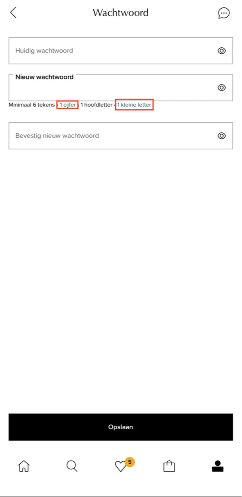
User story
Als bezoeker die een schermlezer gebruikt, wil ik geïnformeerd worden wanneer aan een wachtwoordeis is voldaan, zodat ik het wachtwoord kan invullen zonder het invoerveld te verlaten en elke eis handmatig te controleren.
Oplossing
Zorg dat wijzigingen in de wachtwoordeisen als statusberichten beschikbaar zijn via de native toegankelijkheids-API's van het platform. Telkens wanneer een eis van status verandert, moet hulpsoftware de bijgewerkte status automatisch aankondigen (bijvoorbeeld "Bevat een cijfer, voldaan" of "Bevat een kleine letter, voldaan"), zonder dat bezoekers de focus hoeven te verplaatsen.
#69 - Kleur is het enige middel om aan voldane wachtwoordeisen aan te geven
Op het scherm "Wachtwoord" worden de wachtwoordeisen onder het veld "Nieuw wachtwoord" getoond. Terwijl de bezoeker een wachtwoord invoert, veranderen de eisen waaraan is voldaan van zwart naar groen. Kleur is echter de enige visuele aanduiding dat aan een eis is voldaan. Bezoekers die kleurverschillen niet kunnen waarnemen, kunnen mogelijk geen onderscheid maken tussen voldane en niet-voldane eisen. Hetzelfde probleem zie je wanneer het formulier met onjuiste gegevens is verzonden: dan verschijnt de tekst van de eisen in het rood.
User story
Als bezoeker met een beperkte kleurwaarneming, heb ik nodig dat voldane wachtwoordeisen op meer dan alleen kleur worden aangeduid, zodat ik kan bepalen aan welke eisen is voldaan.
Oplossing
Vertrouw niet alleen op kleur om aan te geven dat aan een wachtwoordeis is voldaan. Bied een aanvullende visuele aanduiding, zoals een vinkje-icoon, een andere tekststijl of een andere niet-kleurgebonden aanwijzing. De aanvullende aanduiding moet voor alle bezoekers duidelijk onderscheid maken tussen voldane en niet-voldane eisen.
Op dit scherm ziet de tekst "Instellingen" er visueel uit als een kop, maar in de code is dat niet het geval: hij wordt niet als kop aangeboden aan hulpsoftware. Schermlezergebruikers vertrouwen op kop-semantiek om de structuur van het scherm te begrijpen en om tussen secties te springen met de rotor (iOS) of reading controls (Android). Hetzelfde probleem zie je bij teksten op de schermen die vanaf dit scherm geopend worden, zoals "Locatie", "Pushmeldingen", "E-mailvoorkeuren" en andere.
User story
Als bezoeker die een schermlezer gebruikt, vertrouw ik op koppen om de structuur van het scherm te begrijpen en snel tussen secties te bewegen. Ik verwacht dat elke visuele sectiekop ook als kop wordt aangeboden, zodat ik efficiënt kan navigeren.
Oplossing
Markeer visuele sectiekoppen als toegankelijkheidskoppen, zodat hulpsoftware ze correct aanbiedt. Voeg in iOS UIKit .header toe aan accessibilityTraits. Gebruik in SwiftUI .accessibilityAddTraits(.isHeader). Stel op Android android:accessibilityHeading="true" in (API 28+) of roep ViewCompat.setAccessibilityHeading(view, true) aan.
Op dit scherm is de tekst "Onze winkels" visueel opgemaakt als een kop, maar in de code is dat niet het geval en wordt die niet als kop aangeboden aan hulpsoftware. Schermlezergebruikers vertrouwen op kop-semantiek om de structuur van het scherm te begrijpen en om tussen secties te springen met de rotor (iOS) of reading controls (Android).
User story
Ik gebruik een schermlezer en vertrouw op koppen om de structuur van het scherm te begrijpen en snel tussen secties te bewegen. Ik verwacht dat elke visuele sectiekop ook als kop wordt aangeboden, zodat ik efficiënt kan navigeren.
Oplossing
Markeer visuele sectiekoppen als toegankelijke koppen, zodat hulpsoftware ze correct aanbiedt. In iOS UIKit voeg je .header toe aan accessibilityTraits; in SwiftUI gebruik je .accessibilityAddTraits(.isHeader). In Android stel je android:accessibilityHeading="true" in (API 28+) of roep je ViewCompat.setAccessibilityHeading(view, true) aan.
Op dit scherm zijn de teksten "Chun Café x de Bijenkorf" en "Openingstijden" visueel opgemaakt als koppen, maar in de code is dat niet het geval en worden ze niet als kop aangeboden aan hulpsoftware. Schermlezergebruikers vertrouwen op kop-semantiek om de structuur van het scherm te begrijpen en om tussen secties te springen met de rotor (iOS) of reading controls (Android). Hetzelfde probleem doet zich voor bij de volgende teksten in het paneel "Openingstijden" dat geopend kan worden met de knop "Bekijk meer openingstijden": "Openingstijden", "29 juni t/m 5 juli" en "6 juli t/m 12 juli".
User story
Ik gebruik een schermlezer en vertrouw op koppen om de structuur van het scherm te begrijpen en snel tussen secties te bewegen. Ik verwacht dat elke visuele sectiekop ook als kop wordt aangeboden, zodat ik efficiënt kan navigeren.
Oplossing
Markeer visuele sectiekoppen als toegankelijke koppen, zodat hulpsoftware ze correct aanbiedt. In iOS UIKit voeg je .header toe aan accessibilityTraits; in SwiftUI gebruik je .accessibilityAddTraits(.isHeader). In Android stel je android:accessibilityHeading="true" in (API 28+) of roep je ViewCompat.setAccessibilityHeading(view, true) aan.
Op dit scherm is de tekst "Klantenservice" visueel opgemaakt als een kop, maar in de code is dat niet het geval en wordt die niet als kop aangeboden aan hulpsoftware. Schermlezergebruikers vertrouwen op kop-semantiek om de structuur van het scherm te begrijpen en om tussen secties te springen met de rotor (iOS) of reading controls (Android). Hetzelfde probleem doet zich voor bij de teksten op de schermen die vanaf dit scherm geopend worden, zoals "Gegevens servicekantoor" en "Veelgestelde vragen".
User story
Ik gebruik een schermlezer en vertrouw op koppen om de structuur van het scherm te begrijpen en snel tussen secties te bewegen. Ik verwacht dat elke visuele sectiekop ook als kop wordt aangeboden, zodat ik efficiënt kan navigeren.
Oplossing
Markeer visuele sectiekoppen als toegankelijke koppen, zodat hulpsoftware ze correct aanbiedt. In iOS UIKit voeg je .header toe aan accessibilityTraits; in SwiftUI gebruik je .accessibilityAddTraits(.isHeader). In Android stel je android:accessibilityHeading="true" in (API 28+) of roep je ViewCompat.setAccessibilityHeading(view, true) aan.
Op dit scherm is de tekst "Wat wil je met ons delen?" visueel opgemaakt als een kop, maar in de code is dat niet het geval en wordt die niet als kop aangeboden aan hulpsoftware. Schermlezergebruikers vertrouwen op kop-semantiek om de structuur van het scherm te begrijpen en om tussen secties te springen met de rotor (iOS) of reading controls (Android).
User story
Ik gebruik een schermlezer en vertrouw op koppen om de structuur van het scherm te begrijpen en snel tussen secties te bewegen. Ik verwacht dat elke visuele sectiekop ook als kop wordt aangeboden, zodat ik efficiënt kan navigeren.
Oplossing
Markeer visuele sectiekoppen als toegankelijke koppen, zodat hulpsoftware ze correct aanbiedt. In iOS UIKit voeg je .header toe aan accessibilityTraits; in SwiftUI gebruik je .accessibilityAddTraits(.isHeader). In Android stel je android:accessibilityHeading="true" in (API 28+) of roep je ViewCompat.setAccessibilityHeading(view, true) aan.
Op dit scherm hebben interactieve elementen geen rol (of accessibility trait) die aan hulpsoftware wordt aangeboden. Zo worden bijvoorbeeld het element met het "X"-icoon waarmee het scherm gesloten wordt, de beoordelingselementen onder "Hoe zou je deze pagina of app beoordelen?", de interactieve elementen onder "Waar wil je feedback over geven?" en andere elementen aangekondigd zonder dat duidelijk is dat het interactieve bedieningselementen zijn. Daardoor horen schermlezergebruikers wel de labels van de elementen, maar niet of het knoppen of een ander type bedieningselement zijn. Dit maakt het lastig te begrijpen dat de elementen geactiveerd kunnen worden en welk type interactie ze ondersteunen.
User story
Ik gebruik een schermlezer om de app te lezen. Wanneer ik een element tegenkom zonder rol, weet ik niet wat het doet. Ik verwacht dat mijn schermlezer me vertelt of het een knop, link of ander element is.
Oplossing
Stel op elk interactief en structureel element een rol of trait in. In iOS gebruik je accessibilityTraits (bijvoorbeeld .button, .link, .header, .image) of in SwiftUI .accessibilityAddTraits(...). In Android gebruik je native componenten die al een rol hebben (Button, Switch, CheckBox), of stel je bij eigen componenten de rol in via AccessibilityNodeInfoCompat.setRoleDescription(...) of door View te subclassen en onInitializeAccessibilityNodeInfo te overschrijven.
#76 - Geselecteerde status wordt niet aangeboden aan hulpsoftware
Op dit scherm zijn interactieve bedieningselementen visueel geselecteerd, maar hun geselecteerde status wordt niet aangeboden aan hulpsoftware. Schermlezergebruikers horen niet of het element wel of niet geselecteerd is. Dit geldt bijvoorbeeld voor de beoordelingselementen onder "Hoe zou je deze pagina of app beoordelen?", de interactieve elementen onder "Waar wil je feedback over geven?", het selectievakje "Voeg schermfoto toe door door het vakje te selecteren" en andere elementen.
User story
Ik gebruik een schermlezer om de app te lezen. Wanneer ik een tab of selectievakje tegenkom, kan ik niet horen of die op dat moment geselecteerd is. Ik verwacht dat mijn schermlezer de huidige status duidelijk aankondigt.
Oplossing
Werk de toegankelijkheidsstatus van het element bij, zodat die weergeeft of het geselecteerd is. In iOS voeg je .selected toe aan accessibilityTraits, of stel je accessibilityValue in op een gelokaliseerde waarde "Selected" / "Not selected". In Android roep je setSelected(true/false) aan op de view, of werk je voor aanvinkbare elementen AccessibilityNodeInfoCompat.setCheckable(true) en setChecked(true/false) bij. Zorg dat de status meebeweegt zodra de waarde verandert, zodat schermlezergebruikers altijd de huidige status horen.
Op dit scherm staat een knop "Verzenden". De witte tekst op de oranje (#F6A801) achtergrond heeft een contrastverhouding van 2,0:1 met de achtergrond. Normale tekst moet een contrastverhouding van minimaal 4,5:1 hebben, en grote tekst (18pt en groter, of 14pt vet en groter) minimaal 3,0:1. Hetzelfde probleem doet zich voor bij de tekst van de opties onder "Waar wil je feedback over geven?" wanneer deze opties geselecteerd zijn, en bij de foutmeldingen die verschijnen wanneer het formulier met fouten wordt verzonden. Een vergelijkbaar probleem doet zich voor bij de placeholderteksten in de invoervelden die getoond worden wanneer een van de opties (bijvoorbeeld "Er werkt iets niet in de app") onder "Waar wil je feedback over geven?" geselecteerd is. De grijze (#A8A8A8) tekst ("Vul hier jouw antwoord in") op de witte achtergrond heeft een contrastverhouding van 2,4:1.
User story
Ik heb een visuele beperking. Wanneer ik tekst lees die nauwelijks afsteekt tegen de achtergrond, kan ik de woorden niet onderscheiden. Ik verwacht dat tekst altijd duidelijk zichtbaar is tegen de achtergrond.
Oplossing
Pas de tekstkleur, de achtergrondkleur, of beide aan, zodat de contrastverhouding aan het minimum voldoet. Controleer het resultaat met een contrastchecker en voor elke status waarin de tekst voorkomt (standaard, uitgeschakeld, over afbeeldingen, op gekleurde achtergronden) en in zowel light- als dark mode.
Op dit scherm hebben de oranje (#F9AD11) "*"-iconen naast de formulierlabels een contrastverhouding van 1,9:1 met de witte achtergrond. Interface-elementen en betekenisvolle grafische elementen moeten minimaal 3,0:1 contrast hebben met aangrenzende kleuren, zodat slechtziende bezoekers ze kunnen herkennen en lokaliseren. Hetzelfde probleem doet zich voor bij het aangevinkte selectievakje "Voeg schermfoto toe door door het vakje te selecteren" en bij geselecteerde keuzerondjes die verschijnen wanneer een van de opties (bijvoorbeeld "Er werkt iets niet in de app") onder "Waar wil je feedback over geven?" geselecteerd is. Een vergelijkbaar probleem doet zich voor bij de invoervelden die getoond worden wanneer een van de opties (bijvoorbeeld "Er werkt iets niet in de app") onder "Waar wil je feedback over geven?" geselecteerd is. De grijze (#CECECE) randen van de velden op de witte achtergrond hebben een contrastverhouding van 1,6:1.
User story
Ik heb een visuele beperking. Wanneer ik een formulier invul, kan ik niet zien waar invoervelden beginnen of eindigen. Ik verwacht dat knoppen en velden duidelijk afsteken tegen de achtergrond.
Oplossing
Pas de kleur van het element of de achtergrond aan zodat de contrastverhouding minimaal 3,0:1 is. Doe dit voor elke status die informatie overbrengt (standaard, focus, geselecteerd, aangevinkt) en in zowel light- als dark mode. Controleer de verhouding met een contrastchecker.
#79 - Statusbericht wordt niet aangekondigd aan schermlezergebruikers
Op dit scherm verschijnt het statusbericht "Bedankt voor uw feedback!" wanneer het formulier succesvol is verzonden, maar dit wordt niet aangekondigd door schermlezers. Wanneer informatie op het scherm verandert, zoals een bevestiging, een foutmelding of een laadstatus, horen schermlezergebruikers een aankondiging te krijgen zonder dat ze de focus naar het bericht hoeven te verplaatsen.
User story
Ik gebruik een schermlezer om de app te lezen. Wanneer er een statusbericht op de pagina verschijnt, kondigt mijn schermlezer dat niet aan. Ik verwacht dat statusberichten automatisch worden voorgelezen, zonder dat ik ernaartoe hoef te navigeren.
Oplossing
Stuur statuswijzigingen als live aankondigingen naar hulpsoftware, zonder de focus te verplaatsen. In iOS verstuur je een UIAccessibility.Notification.announcement (of .layoutChanged / .screenChanged voor grotere wijzigingen). In Android gebruik je View.announceForAccessibility(...) of stel je de statuscontainer in als live region met android:accessibilityLiveRegion="polite" (of "assertive" voor urgente berichten). De bezoeker blijft waar die is en hoort de update op de achtergrond.
Op dit scherm opent de knop met drie puntjes bovenaan het scherm "Gespreksopties". Op dat scherm bevat het tekstveld de grijze (#B0B0B0) placeholdertekst "Zoeken". Die heeft een contrastverhouding van 2,0:1 met de lichtgrijze (#F6F6F6) achtergrond. Normale tekst moet een contrastverhouding van minimaal 4,5:1 hebben, en grote tekst (18pt en groter, of 14pt vet en groter) minimaal 3,0:1.
User story
Ik heb een visuele beperking. Wanneer ik tekst lees die nauwelijks afsteekt tegen de achtergrond, kan ik de woorden niet onderscheiden. Ik verwacht dat tekst altijd duidelijk zichtbaar is tegen de achtergrond.
Oplossing
Pas de tekstkleur, de achtergrondkleur, of beide aan, zodat de contrastverhouding aan het minimum voldoet. Controleer het resultaat met een contrastchecker en voor elke status waarin de tekst voorkomt (standaard, uitgeschakeld, over afbeeldingen, op gekleurde achtergronden) en in zowel light- als dark mode.
Op dit scherm opent de knop met drie puntjes bovenaan het scherm "Gespreksopties". Op dat scherm bevat het tekstveld een grijs (#A9A9A9) vergrootglas-icoon. Dit icoon heeft een contrastverhouding van 2,2:1 met de lichtgrijze (#F6F6F6) achtergrond. Daarnaast heeft het tekstveld een lichtgrijze (#F6F6F6) kleur. Tegen de witte achtergrond is de contrastverhouding te laag: 1,1:1. Een vergelijkbaar probleem doet zich ook voor in de chat na het activeren van een zoekresultaat. Het overeenkomende bericht wordt aangegeven met een oranje (#F4CB57) markering, maar het contrast van de markering met de witte achtergrond is onvoldoende: 1,6:1. Interface-elementen en betekenisvolle grafische elementen moeten minimaal 3,0:1 contrast hebben met aangrenzende kleuren, zodat slechtziende bezoekers ze kunnen herkennen en lokaliseren.
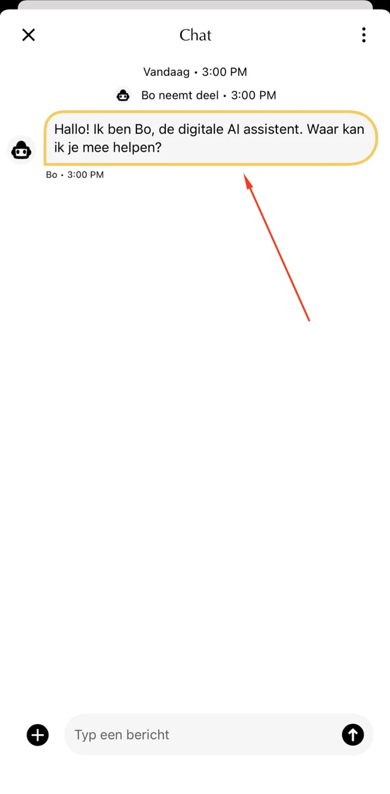
User story
Ik heb een visuele beperking. Wanneer ik een formulier invul, kan ik niet zien waar invoervelden beginnen of eindigen. Ik verwacht dat knoppen en velden duidelijk afsteken tegen de achtergrond.
Oplossing
Pas de kleur van het element of de achtergrond aan zodat de contrastverhouding minimaal 3,0:1 is. Doe dit voor elke status die informatie overbrengt (standaard, focus, geselecteerd, aangevinkt) en in zowel light- als dark mode. Controleer de verhouding met een contrastchecker.
Op dit scherm opent de knop met drie puntjes bovenaan het scherm "Gespreksopties". Op dat scherm gebruikt het zoekveld de placeholdertekst "Zoeken" als enige zichtbare label. Er wordt geen in beeld blijvend label geboden. Zodra bezoekers tekst gaan invoeren, verdwijnt de placeholder en blijft het veld zonder zichtbaar label achter. Daardoor kunnen bezoekers het doel van het veld mogelijk niet meer herkennen tijdens het invoeren of nakijken van hun invoer. Er is wel een zoekicoon (vergrootglas) aanwezig, maar dat kan geen volwaardige vervanging zijn van een zichtbaar label. Bovendien heeft het icoon onvoldoende contrast met de achtergrond, wat apart wordt gerapporteerd.
User story
Als bezoeker met een cognitieve beperking, slechtziendheid of dyslexie heb ik bij elk invoerveld een zichtbaar label nodig dat beschikbaar blijft terwijl ik tekst invoer, zodat ik altijd het doel van het veld kan herkennen.
Oplossing
Geef het zoekveld een permanent zichtbaar label dat zichtbaar blijft, ongeacht of het veld tekst bevat. De placeholder mag gebruikt worden om een voorbeeld of hint te geven, maar niet als het enige zichtbare label.
Over dit onderzoek
Leeswijzer
Onze rapporten zijn anders. Bij het bespreken van de gevonden problemen volgen wij niet de structuur van de norm, maar die van jouw website of app. Hierdoor kun je gewoon per pagina of scherm aan de slag gaan. Wel zo makkelijk! Je vindt verderop een overzicht van alle pagina’s met problemen.
We geven je bij elk gevonden issue een paar voorbeelden, maar niet een complete lijst. Controleer zelf of het probleem ook nog op andere plekken voorkomt. Zie het rapport als een leidraad.
Gebruikte norm
Dit onderzoek laat zien in hoeverre de app op dit moment voldoet aan WCAG 2.1, niveau A en AA. WCAG staat voor Web Content Accessibility Guidelines. Dit is de internationale norm voor digitale toegankelijkheid. De Europese norm EN 301 549 bevat alle eisen van WCAG op niveau A en AA.
In dit rapport hebben we korte beschrijvingen van de succescriteria uit de norm opgenomen, met een algemene uitleg erbij. Wil je ze helemaal lezen? Bekijk dan de documentatie van WCAG.
Gebruikte onderzoeksmethode
We gebruiken de onderzoeksmethode WCAG-EM van het W3C. Het proces ziet er als volgt uit:
vaststellen wat binnen en buiten scope valt
vaststellen welke technologieën zijn gebruikt
steekproef (sample) samenstellen
steekproef onderzoeken
gevonden issues beschrijven
Het grootste deel van het onderzoek doen we met de hand. Voor een deel van de toegankelijkheidseisen gebruiken we automatische tools als ondersteuning, zoals axe-core en Chrome Developer Tools.
Belangrijk om te weten
Dit rapport helpt je om de toegankelijkheid van je app te verbeteren. Maar let op: het is geen definitieve, volledige lijst van alle aanwezige toegankelijkheidsproblemen. Dat zit zo:
Het is een steekproef
Ten eerste is het onderzoek gebaseerd op een steekproef. Die is op een betrouwbare manier genomen, en de meeste problemen zullen daardoor zeker aan het licht komen. Toch kan een probleem net buiten de steekproef vallen. Bij een volgend onderzoek kan het wel ontdekt worden.
Op basis van falsificatie
We beoordelen vanuit het principe van falsificatie. Dat houdt in dat we proberen te bewijzen dat iets niet waar is, in plaats van te bevestigen dat het klopt. ‘Voldoet’ betekent daarom dat we geen reden hebben gevonden om een punt af te keuren. Maar als we later wél een reden vinden, kan het alsnog worden afgekeurd.
Voortschrijdend inzicht
Het komt voor dat de beoordeling van een succescriterium op detailniveau verandert. De norm beschrijft namelijk niet élk mogelijk scenario. Samen met andere onderzoeksbureaus overleggen we hoe we met bepaalde situaties omgaan. Zo kan iets dat nu wordt afgekeurd, soms bij een volgend onderzoek worden goedgekeurd en andersom.
Oplossen leidt tot nieuw probleem
Ten slotte kan het gebeuren dat bij het oplossen van een probleem onbedoeld een nieuw toegankelijkheidsprobleem ontstaat. Dat komt dan bij een volgend onderzoek pas naar voren.
Hoe werkt dit rapport?
Bevindingen bekijken en filteren
Alle gevonden toegankelijkheidsproblemen staan onder Gevonden problemen. Je kunt de bevindingen filteren op:
Impact (Groot, Medium, Klein, Advies) — hoe ernstig is het probleem voor de gebruiker?
Type (Content, Techniek) — moet de inhoud of de techniek worden aangepast?
Status (Open, Opgelost) — welke problemen zijn al verholpen?
Voortgang bijhouden
Je kunt je voortgang op twee manieren bijhouden:
CSV-export — exporteer alle bevindingen als CSV-bestand en laad het in een (online) spreadsheet om met je team samen te werken.
Jira-export — exporteer alle bevindingen als Jira-compatibel CSV-bestand. Importeer het via Jira > Issues > Import issues from CSV. Bevindingen worden aangemaakt als bugs met prioriteit op basis van impact.
Registreer in de browser — activeer deze optie om per bevinding bij te houden of het is opgelost. Je voortgang wordt opgeslagen in je browser. Niemand anders kan je resultaat zien. Let op: de voortgang is gekoppeld aan je browser. Als je een andere browser of een ander apparaat gebruikt, begint de telling opnieuw.
Plan van aanpak — download een geprioriteerd plan van aanpak om de gevonden problemen stap voor stap op te lossen. Dit is beschikbaar bij audits vanaf maart 2026.
Link naar een specifieke bevinding delen
Bij elke bevinding verschijnt een link-icoon wanneer je er met de muis overheen gaat. Klik op dit icoon om de directe link naar die bevinding te kopiëren. Je kunt deze link plakken in een e-mail of chatbericht, bijvoorbeeld om een vraag te stellen aan Proper Access over een specifiek punt.